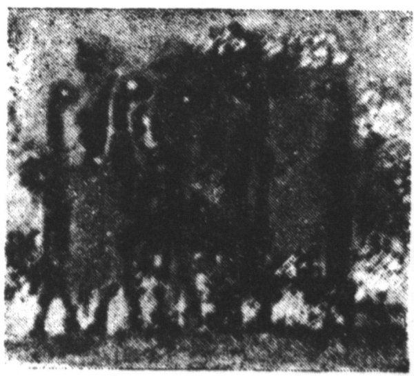

Kapitola 2. Po stupních civilizace (Dějiny Mloků)1
V dějinné epoše, kterou ohlásil G. H. Bondy na památné valné hromadě Pacifické Exportní Společnosti svými prorockými slovy o počínající se utopii2, nemůžeme už měřit historické dění staletími ani desítkami let, jako se dálo v dosavadních dějinách světa, nýbrž čtvrtletími, ve kterých vycházejí kvartální hospodářské statistiky.3
1 Srov. G. Kreuzmann, Geschichte der Molche. Hans Tietze, Der Molch des XX. Jahrhunderts. Kurt Wolff, Der Molch und das deutsche Volk1. Sir Herbert Owen, The Salamanders and the British Empire. Giovanni Focaja, L’evoluzione degli anfibii durante il Fascismo2. Léon Bonnet, Les Urodèles et la Société des Nations. S. Madariaga, Las Salamandras y la Civilización a m. j.
2 Srov. Válka s Mloky, kniha I, kapitola 12.
3 Dokladem toho budiž hned první výstřižek ze sbírky pana Povondry:
MLOČÍ TRH
(ČTK) Podle poslední zprávy, kterou vydal Salamander-Syndicate koncem čtvrtletí, stoupl odbyt Mloků o třicet procent. Za tři měsíce bylo dodáno téměř sedmdesát milionů Mloků zejména do Jižní a Střední Ameriky, Indočíny a Italského Somálska. V nejbližší době se připravuje hloubení a rozšíření Panamského průplavu, vyčištění přístavu v Guayaquilu a odklizení některých mělčin a bradel v úžině Torresově. Jen tyto práce by znamenaly podle přibližného odhadu přemístění devíti miliard krychlových metrů pevných zemin. Se stavěním těžkých leteckých ostrovů na linii Madeira – Bermudy se má započít až příštím jarem. Zasypávání ostrovů Marian v japonském mandátu pokračuje dále; dosud bylo získáno osm set čtyřicet tisíc akrů nové, tzv. lehké souše mezi ostrovy Tinian a Saipan. Vzhledem k rostoucí poptávce jsou Mloci v ceně velmi pevní a znamenají Leading 61, Team 620. Zásoby jsou dostatečné.
V té době je totiž výroba dějin, smíme-li tak říci, podnikánan ve velkém; proto se tempo dějin neobyčejně (podle odhadu asi pateronásobně) zrychluje. Dnes prostě nemůžeme čekat několik set let, aby se se světem stalo něco dobrého nebo zlého. Například stěhování národů, které se kdysi vleklo po několik věků, by se při dnešní organizaci transportu dalo se vším všudy pořídit za tři léta; jinak se na něm nemůže vydělat. Podobně je tomu s likvidací Římské říše, s kolonizováním pevnin, vyvražděním indiánů a tak dále. To vše by se dalo dnes absolvovat nesrovnatelně rychleji, kdyby to bylo svěřeno kapitálově silným podnikatelům. V tom směru obrovský úspěch Mločího syndikátu a jeho mohutný vliv na světové dějiny nepochybně ukazuje cestu budoucím.
Dějiny Mloků se tedy od začátku vyznačují tím, že byly dobře a racionálně organizovány; první, ale nikoliv jediná zásluha o to náleží Mločímu syndikátu; budiž uznáno, že také věda, filantropie, osvěta, tisk a jiní činitelé mají nemalý podíl na úžasném rozšíření a pokroku Mloků. Nicméně byl to Mločí syndikát, který tak říkajíc den za dnem dobýval pro Salamandry nových kontinentů a nových břehů, i když musel překonávat mnohé překážky brzdící tuto expanzi4.
4 O takových překážkách svědčí například tato zpráva, vystřižená z novin bez data:
ANGLIE SE UZAVÍRÁ MLOKŮM?
(Reuter) Na dotaz člena Dolní sněmovny Mr J. Leedse odpověděl dnes sir Samuel Mandeville, že vláda Jeho Veličenstva uzavřela kanál Suezský pro veškeré transporty Mloků; dále že nehodlá připustit, aby jediný Mlok byl zaměstnán na pobřeží nebo ve svrchovaných vodách britských ostrovů. Důvodem k těmto opatřením, prohlásil sir Samuel, je jednak bezpečnost britských ostrovů, jednak platnost starých zákonů a smluv o potírání obchodu s otroky.
Na dotaz člena parlamentu Mr. B. Russela sdělil sir Samuel, že toto stanovisko se ovšem netýká britských dominií a kolonií.
Čtvrtletní zprávy syndikátu ukazují, jak jsou postupně osídlovány Mloky přístavy indické a čínské; jak mločí kolonizace zaplavuje pobřeží Afriky a přeskakuje na kontinent americký, kde záhy vznikají nové, nejmodernější mločí líhně v zálivu Mexickém; jak vedle těchto širokých kolonizačních vln jsou vysílány menší skupiny Mloků jako pionýrský předvoj budoucího exportu. Tak například holandskému Waterstaatu poslal Mločí syndikát darem tisíc prvotřídních Mloků; městu Marseille věnoval šest set Salamandrů k vyčištění Starého přístavu, a podobně jinde. Prostě na rozdíl od lidského osídlování světa se šíření Mloků dálo plánovitě a velkoryse; kdyby bylo ponecháno přírodě, táhlo by se jistě po staletí a tisíciletí; co platno, příroda není a nikdy nebyla tak podnikavá a účelná jako lidská výroba a obchod. Zdá se, že čilá poptávka měla vliv i na plodnost Mloků; výnos potěru z jedné samice stoupl až na sto padesát pulců ročně. Jisté pravidelné ztráty, které na Mlocích působili žraloci, ustaly skoro úplně, když Mloci byli opatřeni podvodními pistolemi s náboji dumdum na obranu proti dravým rybám.5
Šíření Mloků se ovšem nedálo všude stejně hladce; někde se konzervativní kruhy ostře ohrazovaly proti tomuto zavádění nových pracovních sil, spatřujíce v nich nekalou konkurenci pro lidskou práci6; jiní vyslovovali obavy, že Mloci, živící se drobným mořským zvířectvem, ohrozí rybolov; někteří zase tvrdili, že svými podmořskými norami a chodbami podrývají břehy a ostrovy. Po pravdě řečeno, bylo dost lidí, kteří přímo varovali před zaváděním Mloků; ale to se děje odjakživa, že se každá novota a každý pokrok setkávají s odporem a nedůvěrou; bylo tomu tak u továrních strojů a opakovalo se to s Mloky. Na jiných místech se vyskytla nedorozumění jiného druhu7, ale dík vydatné pomoci světového tisku, který správně ocenil jak obrovské možnosti obchodu s Mloky, tak výnosnou a velkorysou inzerci, která s ním byla spojena, bylo instalování Salamandrů ve všech částech světa vítáno namnoze se živým zájmem, ano i s nadšením.8
5 Užívalo se k tomu skoro obecně pistolí, které vynalezl inž. Mirko Šafránek a jež vyráběla brněnská Zbrojovka.
6 Srov. s touto novinářskou zprávou:
STÁVKOVÉ HNUTÍ V AUSTRÁLII
(Havas) Vůdce australských Trade Unií3 Harry Mac Namara ohlašuje generální stávku všech zaměstnanců přístavních, dopravních, elektrárenských a jiných. Odborové organizace totiž žádají, aby byl dovoz pracovních Mloků do Austrálie přísně kontingentován podle imigračních zákonů. Naproti tomu australští farmáři se domáhají toho, aby byl dovoz Mloků uvolněn, neboť jejich krmením značně stoupá odbyt domácí kukuřice a zvířecích tuků, zejména ovčího loje. Vláda usiluje o kompromis; Mločí syndikát nabízí, že by vyplácel tradeuniím za každého přivezeného Mloka příspěvek šesti šilinků. Vláda je ochotna dát záruky, že Mloci budou zaměstnáni jenom ve vodě a že se (z důvodů mravnostních) nevynoří z vody víc než 40 cm, to jest po prsa. Trade Unie však trvají na 12 cm a žádají za každého Mloka poplatek deseti šilinků vedle registrační taxy. Zdá se, že dojde k dohodě za přispění státní pokladny.
7 MLOCI ZACHRAŇUJÍ 36 TONOUCÍCH
(Od našeho zvl. zpravodaje)
Madras 3. dubna
Ve zdejším přístavu narazil parník Indian Star na člun převážející asi čtyřicet domorodců, který se ihned potopil. Dříve než bylo možno vypravit policejní barkasu4, přichvátali na pomoc Mloci pracující na odklízení bahna z přístavu a dopravili na břeh třicet šest tonoucích. Jeden Salamandr sám vytáhl z vody tři ženy a dvě děti. Odměnou za tento statečný čin dostali Mloci písemné poděkování od místních autorit v nepromokavém pouzdře.

Záchranné mužstvo Mloků
Naproti tomu domorodé obyvatelstvo je krajně pobouřeno tím, že Mlokům bylo dovoleno dotknouti se tonoucích osob vyšších kast. Považuje totiž Mloky za nečisté a nedotknutelné. V přístavu se srotilo několik tisíc domorodců, domáhajících se toho, aby Mloci byli z přístavu vykázáni. Policie však udržuje pořádek; byli toliko tři zabití a sto dvacet zatčených.
K desáté hodině večer byl obnoven klid. Salamandři pracují dál.
8 Srovnej následující vysoce zajímavý výstřižek, bohužel v neznámém jazyce a následkem toho nepřeložitelný:
SAHT NA KCHRI TE SALAAMANDER BWTAT
Saghr gwan t’lap ne Salaam Ander bwtati og t’cheni berchi ne Simbwana m’bengwe ogandi sűkh na moďmoď opwana Salaam Ander sri m’oana gwen’s. Og di limbw, og di bwtar na Salaam Ander kchri p’che ogandi p’we o’gwandi te ur maswâli sűkh? Na, ne ur lingo t’Islamli kcher oganda Salaam Andriaa ashti. Bend op’tonga kchri Simbwana mędh, salaam!
Obchod s Mloky byl většinou v rukou Mločího syndikátu, který jej prováděl svými vlastními, zvlášť k tomu účelu konstruovanými tankovými loďmi; střediskem obchodu a jakousi burzou na Mloky byl Salamander-Building v Singapore.9
9 Srov. obšírné a objektivní vylíčení, signované značkou e. w., 5. října:
S-TRADE
„Singapore 4. října. Leading 63. Heavy 317. Team 648. Odd Jobs 26,35. Trash 0,08. Spawn 80–132.“
Takovouto zprávu může čtenář novin najít denně v hospodářské rubrice svého listu mezi telegramy o ceně bavlny, cínu nebo pšenice. Víte však už, co znamenají tato záhadná čísla a slova? Nu ano, obchod s Mloky čili S-Trade; ale jak ten obchod opravdu vypadá, o tom má většina čtenářů představu méně jasnou. Snad si představují veliké tržiště hemžící se tisíci a tisíci Mloky, kde se procházejí kupci v tropických přílbách a turbanech, prohlížejí nabízené zboží a konečně ukáží prstem na dobře vyvinutého, zdravého, mladého Salamandra řkouce: „Prodejte mi tenhle kus; co stojí?“
Ve skutečnosti Mločí trh vypadá naprosto jinak. V singaporské mramorové budově S-Trade neuvidíte jediného Mloka, nýbrž jenom čilé a elegantní úředníky v bílých šatech, přijímající telefonní příkazy. „Ano, pane. Leading stojí 63. Kolik? Dvě stě kusů? Ano, pane. Dvacet Heavy a sto osmdesát Team. Okey, rozumím. Loď pluje za pět neděl. Right? Thank you, sir.“ Celý palác S-Trade zvučí telefonními hovory; máte spíš dojem úřadu nebo banky než nějakého trhu; a přece tato bílá, ušlechtilá budova s jónským sloupovím v průčelí je tržištěm světovějším než bagdádský bazar za Hárúna ar Rašída.
Avšak vraťme se k citované tržní zprávě s její obchodní hantýrkou. Leading, to jsou prostě zvlášť vybraní, inteligentní, zpravidla tříletí Mloci, pečlivě vycvičení k tomu, aby byli dozorci a vedoucími v pracovních kolonách Mloků. Prodávají se po jednom bez ohledu na tělesnou váhu; cení se jenom jejich inteligence. Singaporští Leading, mluvící dobrou angličtinou, se považují za prvotřídní a nejspolehlivější; porůznu se nabízejí také jiné známky vedoucích Mloků, jako takzvaní Capitanos, Inženýři, Malayan Chiefs, Foremanders a jiní, ale Leading jsou hodnoceni nejvýš. Dnes se jejich cena pohybuje kolem šedesáti dolarů za kus.
Heavy jsou těžcí, atletičtí, obyčejně dvouletí Mloci, jejichž váha se pohybuje mezi sto až sto dvaceti librami. Prodávají se jenom v četách (tzv. bodies) po šesti jedincích. Jsou vycvičeni pro nejtěžší tělesné práce, jako je lámání skal, odvalování balvanů a podobně. Stojí-li v uvedené zprávě Heavy 317, znamená to, že šestičlenná četa (body) Těžkých Mloků se platí třemi sty sedmnácti dolary. Na každou četu Těžkých se určuje zpravidla jeden Leading jako vedoucí a dozorce.
Team jsou obyčejní pracovní Mloci ve váze 80 až 100 liber, kteří se prodávají jenom v pracovních družinách (teamech) po dvaceti kusech; jsou určeni k hromadné práci a užívá se jich s oblibou k pracím bagrovacím, k stavění náspů nebo hrází a podobně. Na každý dvacetičlenný team připadá jeden Leading.
Odd Jobs jsou třída pro sebe. Jsou to Mloci, kterým se z různých důvodů nedostalo hromadného a specializovaného školení, například proto, že vyrostli mimo veliké, odborně řízené mločí farmy. Jsou to vlastně polodivocí, ale často velmi nadaní Mloci. Kupují se po jednom kuse nebo po tuctech a užívá se jich pro různé pomocné práce nebo drobnější úkony, na které nestojí za to komandovat celé mločí čety nebo družiny. Můžeme-li Leading považovat za elitu mezi Mloky, představují Odd Jobs cosi jako drobný proletariát. V poslední době se kupují s oblibou jako mločí surovina, kterou jednotliví podnikatelé dále pěstí a třídí na Leading, Těžké, Team nebo Trash.
Trash neboli brak (póvl, odpadky) jsou méněcenní, slabí nebo tělesně vadní Mloci, kteří se neprodávají jednotlivě ani v určitých partiích, nýbrž hromadně na váhu, obyčejně po celých desítkách tun; kilogram živé váhy stojí dnes sedm až deset centíků. Není vlastně známo, k čemu slouží a za jakým účelem se kupují – snad k nějakým lehčím pracím ve vodě; aby nevzniklo nedorozumění, připomínáme, že Mloci jsou pro lidi nepoživatelní. Tento Trash kupují skoro šmahem čínští překupníci; kam jej dovážejí, není zjištěno.
Spawn je jednoduše mločí potěr, přesněji řečeno pulci do jednoho roku. Prodávají a kupují se po celých stovkách a těší se velmi dobrému odbytu, hlavně proto, že jsou laciní a jejich doprava přijde nejlevněji; teprve na místě dodání se dopěstí do té doby, kdy jsou schopni práce. Spawn se dopravují v sudech, neboť pulci neopouštějí vodu, jako denně potřebují činit Mloci dospělí. Často se stává, že ze Spawnu dorostou jednotlivci mimořádně nadaní, převyšující dokonce standardizovaný typ Leading; tím nabývá obchod s potěrem zvláštní zajímavosti. Vysoce nadaní Mloci se potom prodávají po několika stech dolarech za kus; americký milionář Denicker zaplatil dokonce dva tisíce dolarů za Mloka, který plynně mluvil devíti jazyky, a dal jej dopravit zvláštní lodí až do Miami; tato doprava sama stála téměř dvacet tisíc dolarů. V poslední době se mločí potěr s oblibou kupuje pro takzvané mločí stáje, kde se vybírají a trénují rychlí sportovní Mloci; ti se potom zapřahají po třech do plochých lodic v podobě lastury. Závody v lasturách vlečených Mloky jsou nyní vysokou módou a nejoblíbenější zábavou mladých Američanek na Palm Beach, v Honolulu nebo na Kubě; říká se jim Triton-Races nebo Venušiny regaty. V lehké, zdobné lastuře, klouzající po mořské hladině, stojí závodnice v co nejkratším a nejrozkošnějším koupacím oděvu a třímá v rukou hedvábné otěže mločího trojspřeží; závodí se prostě o titul Venuše. Mr J. S. Tincker, řečený Král Konzerv, koupil pro svou dcerušku trojspřeží závodních Mloků, Poseidona, Hengista a King Edwarda za neméně než třicet šest tisíc dolarů. Ale to vše už je mimo rámec vlastního S-Trade, který se omezuje na to, že dodává do celého světa solidní pracovní Leadings, Heavies a Teams.
Zmínili jsme se už o mločích farmách. Ať si čtenář nepředstavuje obrovské chovné stáje a ohrady; je to několik kilometrů holého pobřeží, na němž jsou roztroušeny domky z vlnitého plechu. Jeden domek je pro veterináře, jeden pro ředitele a ostatní jsou pro dozorčí personál. Teprve při odlivu je vidět, že od břehu vybíhají do moře dlouhé hráze, rozdělující pobřeží na několik bazénů. Jeden je pro potěr, druhý pro třídu Leading a tak dále; každý druh je krmen a cvičen odděleně. Obé se děje v noci. Se soumrakem vystupují Mloci ze svých děr na břeh a shromáždí se kolem svých učitelů; jsou to obyčejně vysloužilí vojáci. Nejprve je hodina mluvení; učitel předříkává Mlokům slova, například „kopat“, a názorně jim vysvětlí jejich smysl. Potom je seřadí do čtyřstupů a učí je pochodovat; následuje půlhodinka tělocviku a odpočinek ve vodě. Po přestávce se vyučuje, jak zacházet s různými nástroji a zbraněmi, načež se asi po tři hodiny pod dozorem učitelů konají praktické práce ve vodním stavitelství. Nato se Mloci vrátí do vody a jsou krmeni mločími suchary, jež obsahují hlavně kukuřičnou mouku a lůj; Leading a Těžcí Mloci jsou přikrmováni masem. Lenost a neposlušnost se trestá odnětím potravy, jiných tělesných trestů není; ostatně citlivost Salamandrů vůči bolesti je nepatrná. S východem slunce nastává na mločích farmách mrtvý klid; lidé jdou spat a Mloci zmizejí pod hladinou mořskou.
Tento běh věcí se za rok měnívá jenom dvakrát. Jednou v době páření, kdy jsou Mloci po čtrnáct dní ponecháni sami sobě, a podruhé, když k farmě připluje tanková loď Mločího syndikátu a přiveze řediteli farmy příkazy, kolik té které třídy Mloků má být odvedeno. Odvody se konají v noci; lodní důstojník, ředitel farmy a veterinář sedí u stolku s lampou, zatímco dozorci a lodní posádka uzavrou Salamandrům ústup k moři. Nato Mlok po Mloku přistupuje k stolku a je uznán za schopna nebo ne. Odvedení Mloci nastupují potom do člunů, které je odvážejí na tankovou loď. Činí to většinou dobrovolně, to jest na pouhý ostrý rozkaz; jen někdy je třeba mírného násilí, jako je spoutání. Spawn čili potěr je ovšem vyloven sítěmi.
*
Stejně humánně a hygienicky se děje transport Mloků v tankových lodích; obden se jim vyměňuje pumpami voda v nádržích a jsou co nejvydatněji krmeni. Úmrtnost během dopravy dosahuje stěží desíti procent. Na žádost spolků pro ochranu zvířat je na každé tankové lodi přítomen lodní kaplan, který bdí nad lidským zacházením se Salamandry a noc co noc má k nim kázání, v němž jim klade na srdce zejména úctu k lidem a vděčnou poslušnost i lásku k jejich budoucím zaměstnavatelům, kteří nechtějí nic než otecky pečovat o jejich blahobyt. Je zajisté dosti těžko vysvětlit Mlokům tuto oteckou péči, neboť pojem otectví je jim neznám. Mezi vzdělanějšími Salamandry se ujal pro lodní kaplany název Papa Mlok. Velmi se osvědčily také výchovné filmy, kterými se Mlokům během dopravy předvádějí jednak divy lidské techniky, jednak jejich budoucí práce a povinnosti. Jsou lidé, kteří zkratku S-Trade (Salamander-Trade) překládají jako Slave-Trade čili obchod s otroky. Nuže, jako nestranní pozorovatelé můžeme říci, že kdyby někdejší obchod s otroky byl tak dobře organizován a hygienicky tak nezávadně prováděn jako dnešní obchod s Mloky, mohli bychom otrokům jenom gratulovat. Zejména s dražšími Salamandry se zachází opravdu velmi slušně a šetrně, už proto, že kapitán i mužstvo lodi ručí svými gážemi a mzdami za životy Mloků jim svěřených. Pisatel tohoto článku byl svědkem, jak byli i ti nejotužilejší námořníci na tankové lodi S. S. 14 hluboce dojati, když dvě stě čtyřicet prima Mloků v jedné kádi onemocnělo těžkými průjmy. Chodili se na ně dívat s očima téměř plnýma slz a dávali svým lidským citům průchod drsnými slovy: „Tyhle mrchy nám byl čert dlužen!“
Při rostoucím obratu v exportu Mloků vznikl ovšem také divoký obchod; Mločí syndikát nemohl kontrolovat a spravovat všechny mločí líhně, které nebožtík kapitán van Toch rozsel zejména po drobných a odlehlých ostrovech Mikronésie, Melanésie a Polynésie, takže mnoho mločích zálivů bylo ponecháno sobě samotným. Následkem toho se vedle racionálního chovu Salamandrů ustavil ve značných rozměrech i lov na divoké Mloky, připomínající v mnohém ohledu někdejší výpravy na tuleně; byl to lov poněkud ilegální, ale protože nebylo zákonů na ochranu Mloků, byl stíhán nanejvýš jako neoprávněné vkročení na půdu té nebo oné státní svrchovanosti; ježto pak se Mloci na těch ostrovech úžasně množili a tu a tam působili domorodcům jisté škody na polích a v sadech, byly ty divoké výlovy Mloků mlčky považovány za přirozenou regulaci mločí populace.10
10 Citujeme autentické soudobé vylíčení:
BUKANÝŘI XX. STOLETÍ E. E. K.
Bylo jedenáct hodin večer, když kapitán naší lodi kázal stáhnout vlajku státní příslušnosti a spustit čluny. Noc byla měsíčná a stříbřitě zamžená; ostrůvek, ke kterému jsme veslovali, byl myslím Gardner Island v souostroví Fénixově. V takových měsíčních nocích vystupují Mloci na břeh a tančí; můžete se k nim přiblížit a neslyší vás, tak jsou zabráni do svého hromadného, němého tance. Bylo nás dvacet, kteří jsme vystoupili na břeh s vesly v rukou, a rozvinuti v rojnici počali jsme polokruhem obkličovat temný houfec hemžící se na pláži v mléčném světle měsíčním.
Je těžko popsat dojem, jímž působí tanec Mloků. Asi tři sta zvířat sedí na zadních nohou v naprosto přesném kruhu, čelem do středu; vnitřek kruhu je prázdný. Mloci se nehýbají, jsou jako ustrnulí; vypadá to jako kruhová palisáda kolem nějakého tajemného oltáře; ale není tu žádného oltáře ani žádného boha. Najednou jedno ze zvířat zamlaská „ts-ts-ts“ a počne kolébavě kroužit hoření polovinou těla; tento komíhavý pohyb přeskakuje dál a dál, a za několik vteřin kroutí všichni Mloci hoření polovinou těla, aniž se hnuli z místa, rychleji a rychleji, beze zvuku, pořád frenetičtěji, ve zběsilém a opojeném víření. Asi po čtvrthodině ochabne jeden Mlok, druhý, třetí, kolébá se vysíleně a ustrne; opět všichni sedí bez hnutí jako sochy; po chvíli se ozve jinde tiché „ts-ts-ts“, jiný Mlok se začne svíjet a jeho tanec přeskakuje rázem na celý kruh. Vím, že tento popis vypadá hodně mechanicky; ale připojte k tomu křídové světlo měsíční a pravidelné, dlouhé šumění přílivu; mělo to do sebe něco nesmírně magického a jaksi zakletého. Zastavil jsem se s hrdlem sevřeným v bezděčném pocitu hrůzy nebo úžasu. „Člověče, hejbej nohama,“ okřikl mě nejbližší soused, „nebo uděláš díru!“
Zužovali jsme svůj kruh kolem tanečního kruhu zvířat. Muži drželi vesla napříč a mluvili polohlasem, spíš proto, že byla noc, než že by je Mloci mohli slyšet. „Do středu, poklusem,“ zavolal velící důstojník. Rozběhli jsme se k tomu vířícímu kruhu; vesla s temným žuchnutím narazila na hřbety Mloků. Teprve teď se Mloci poděsili, couvali do středu nebo chtěli mezi vesly proklouznout k moři, ale dostali veslem ránu, která je odhodila zpět, skřečící bolestí a strachem. Tlačili jsme je žerděmi do středu, namačkané, napěchované, lezoucí přes sebe v několika vrstvách; deset mužů je svíralo v ohradě vesel a deset šťouchalo a mlátilo vesly po těch, kteří se pokoušeli podlézt nebo proběhnout. Bylo to jediné klubko černého svíjejícího se, zmateně kvákajícího masa, na něž dopadaly temné rány. Potom se otevřela mezera mezi dvěma vesly; vyklouzl tudy Mlok a byl omráčen ranou klackem do týla; po něm druhý a třetí, až jich tu leželo asi dvacet. „Zavřít,“ kázal důstojník, a mezera mezi vesly se uzavřela. Bully Beach a míšenec Dingo popadli do každé ruky nohu jednoho omráčeného Mloka a vlekli je pískem k člunům jako neživé pytle. Někdy se vlečené tělo zakleslo mezi kameny; tu námořník zatahal prudkým a zlostným škubnutím, a noha se utrhla. „To nic není,“ bručel starý Mike, který stál vedle mne. „To mu zas, člověče, naroste.“ Když naházeli omráčené Mloky do člunů, kázal důstojník suše: „Připravte další.“ A znovu dopadaly rány obuškem do týla Mloků. Ten důstojník, Bellamy se jmenoval, byl vzdělaný a tichý člověk, výborný šachista; ale tohle byl lov nebo ještě spíše obchod, tož jaképak okolky. Takto bylo uloveno přes dvě stě omráčených Mloků; asi sedmdesát jich tam zůstalo, kteří byli pravděpodobně mrtvi a nestáli za odvlečení.
Na lodi byli pochytaní Mloci naházeni do nádrží. Naše loď byla stará tank-ship na dopravu nafty; špatně vyčištěné tanky páchly petrolejem a voda v nich byla povlečena mastně a duhově; jen příkrov byl odstraněn, aby tam mohl vzduch; když do toho naházeli Mloky, vypadalo to hustě a odporně jako nějaká nudlová polévka; místy se to slabě a žalostně hýbalo, ale přes den se to nechalo v klidu, aby se Mloci mohli vzpamatovat. Nazítří přišli čtyři muži s dlouhými bidly a šťouchali jimi do té „polévky“ (odborně se tomu opravdu říká soup); míchali těmi hustými těly a pozorovali, která se nehýbou nebo ze kterých odpadává maso; ta pak nabodli na dlouhé háky a vytáhli z kádě. „Je polévka čistá?“ ptal se potom kapitán. „Ano, pane.“ „Přilejte do ní vody!“ „Ano, pane.“ Toto čištění polévky se muselo opakovat denně; pokaždé se vyhodilo do moře šest až deset kusů „zkaženého zboží“, jak se tomu říká; naši loď věrně provázela kavalkáda velkých a skvěle nažraných žraloků. U nádrže to páchlo příšerně; přes občasné vyměňování byla voda v kádích žlutá, posetá výkaly a rozmočenými suchary; v ní malátně šplounala nebo tupě ležela černá těžce oddychující těla. „Tady to mají dobré,“ tvrdil starý Mike. „Já viděl loď, která to vozila v plechových sudech od benzolu; tam jim to pochcípalo všecko.“
Za šest dní jsme nabírali nové zboží na ostrově Nanomea.
*
Tedy takto vypadá obchod s Mloky; pravda, obchod ilegální, přesněji řečeno moderní pirátství, které vybujelo takřka přes noc. Tvrdí se, že téměř čtvrtina všech prodávaných a kupovaných Mloků je lovena tímto způsobem. Jsou mločí líhně, které nestojí Mločímu syndikátu za to, aby tam udržoval stálé farmy; na menších tichomořských ostrovech se rozmnožili Mloci tak, že se stávají přímo obtíží; domorodci je nemají rádi a tvrdí, že provrtávají svými dírami a chodbami celé ostrovy; proto jak koloniální úřady, tak sám Mločí syndikát zamhuřuje oči k tomuto loupežnému přepadání mločích lokalit. Počítá se, že je na čtyři sta pirátských lodí, které se zabývají jenom lupem Mloků. Vedle drobných podnikatelů provozují toto moderní bukanýrství celé lodní společnosti, z nichž největší je Pacific Trade Comp. se sídlem v Dublině; jejím prezidentem je vážený pan Charles B. Harriman. Před rokem byly poměry o něco horší; tehdy nějaký čínský bandita Teng s třemi loďmi přepadal přímo farmy syndikátu a neváhal ani vyvraždit jejich personál, když se mu stavěl na odpor; minulého listopadu byl tento Teng se svým malým loďstvem rozstřílen americkou dělovou lodí Minnetonka u Midway Island. Od té doby nabylo mločí pirátství méně divokých forem a těší se stálému rozkvětu, když byly dohodnuty jisté modality, za nichž je mlčky trpěno, tak například že při přepadu cizího pobřeží bude sňata ze stožáru námořní vlajka domácího státu; že nebude pod záminkou pirátství provozován dovoz a vývoz jiného zboží; že uloupení Mloci nebudou prodáváni za dumpingové ceny a budou označováni v obchodě jako druhá jakost. Mloci v ilegálním obchodě se prodávají po dvaceti až dvaadvaceti dolarech za kus; považují se za nižší sice, ale velmi houževnatý druh, vzhledem k tomu, že přežili strašné zacházení v pirátských lodích. Odhaduje se, že ten transport přečká průměrně dvacet pět až třicet procent chycených Mloků; ale ti už pak něco vydrží. V obchodní mluvě se jim říká Maccaroni a jsou v poslední době znamenáni i v pravidelných tržních zprávách.
*
Dva měsíce nato jsem hrál v šachy s panem Bellamy v hale hotelu France v Saigonu; to už jsem ovšem nebyl najatým námořníkem.
„Koukejte se, Bellamy,“ řekl jsem mu, „vy jste slušný člověk, a jak se říká, gentleman. Není vám někdy proti srsti, že sloužíte něčemu, co je v podstatě nejmizernější otrokářství?“
Bellamy krčil rameny. „Mloci jsou Mloci,“ bručel vyhýbavě.
„Před dvěma sty lety se říkalo, že negři jsou negři.“
„A nebyla to pravda?“ řekl Bellamy. „Šach!“
Tu partii jsem prohrál. Připadalo mi najednou, že každý tah na šachovnici je starý a byl už kdysi někým hrán. Snad i naše dějiny už byly kdysi hrány, a my taháme své figurky stejnými tahy k stejným porážkám jako kdysi. Možná že právě takový slušný a tichý Bellamy lovil kdysi negry na Slonovém pobřeží a vozil je na Haiti nebo do Louisiany, nechávaje je chcípat v podpalubí. Nemyslel tím tehdy nic zlého, ten Bellamy. Bellamy nemyslí nikdy nic zlého. Proto je nenapravitelný.
„Černý to prohrál,“ řekl Bellamy uspokojeně a vstal, aby se protáhl.
Vedle dobře organizovaného obchodu s Mloky a rozsáhlé tiskové propagandy měla největší zásluhu o rozšíření Mloků obrovská vlna technického idealismu, která v tomto období zaplavila celý svět. H. G. Bondy správně předvídal, že lidský duch počne nyní pracovat s celými novými kontinenty a novými Atlantidami. Po celý Mločí Věk panoval mezi techniky živý a plodný spor, mají-li se stavět těžké pevniny s železobetonovými břehy, nebo lehké souše nasypané z mořského písku. Skoro denně se vynořovaly nové gigantické projekty: italští inženýři navrhovali jednak vybudování Velké Itálie, zaujímající téměř celé Středozemní moře až po Tripolsko, Baleáry a Dodekanes, jednak založení nové pevniny, takřečené Lemurie, na východ od Italského Somálska, která by jednou zabrala celý Indický oceán. Skutečně také byl za pomoci celé armády Mloků nasypán nový ostrůvek proti somálskému přístavu Mogadišu v rozloze třinácti a půl akrů. Japonsko projektovalo a zčásti provedlo nový veliký ostrov místo dřívějšího souostrovů ve dva veliké ostrovy, předem nazvané Nový Nippon; na každém se měla dokonce zřídit umělá sopka, která by budoucím obyvatelům připomínala posvátnou Fudžijamu. Proslýchalo se také, že němečtí inženýři budují tajně v Sargasovém moři těžkou, betonovou pevninu, která má být budoucí Atlantidou a mohla by prý ohrožovat Francouzskou západní Afriku; ale jak se zdá, došlo jenom k položení základů. V Holandsku se přikročilo k vysušování Zeelandu; Francie spojila na Guadeloupu Grande Terre, Basse Terre a La Désirade v jediný požehnaný ostrov; Spojené státy začaly budovat na 37. poledníku první letecký ostrov (dvoupatrový, s obrovským hotelem, sportovním stadionem, lunaparkem a biografem pro pět tisíc osob.) Prostě zdálo se, že nyní padly poslední meze, jež lidskému rozmachu kladlo světové moře; nastala radostná epocha úžasných technických plánů; člověk si uvědomoval, že teprve nyní se stává Pánem Světa, dík Mlokům, kteří vystoupili na dějiště světa v pravou chvíli a tak říkajíc s dějinnou nutností. Není sporu, že by nebylo došlo k tomu nesmírnému rozšíření Mloků, kdyby pro ně náš technický věk nebyl připravil tolik pracovních úkolů a tak obrovské pole trvalého zaměstnání. Budoucnost Dělníků Moře se zdála být nyní zajištěna na staletí.
Významný podíl na příznivém vývoji obchodu s Mloky měla také věda, jež záhy obrátila svou pozornost k výzkumu Mloků jak po stránce tělesné, tak po stránce duševní.11
11 Uvádíme referát o vědeckém kongresu v Paříži z pera očitého svědka r. d.
IER Ier CONGRÉS D’URODÈLES
Zkráceně se mu říká Kongres obojživelníků ocasatých, kdežto jeho oficiální titul je o něco delší: První mezinárodní kongres zoologů pro psychologický výzkum obojživelníků ocasatých. Jenže pravý Pařížan nemá rád sáhodlouhé názvy; ti učení profesoři, kteří zasedají v amfiteátru Sorbonny, jsou pro něho prostě Messieurs les Urodèles, páni ocasatí obojživelníci, a dost. Nebo ještě stručněji a neuctivěji: Ces Zoos-là.
Šli jsme se tedy podívat na ces Zoos-là spíše ze zvědavosti než z referentské povinnosti. Ze zvědavosti, rozumějte, která se netýkala těch univerzitních, většinou starších a brejlatých kapacit, nýbrž právě těch… tvorů (proč nám nechce z pera slovo „zvířat“?), o kterých se toho už tolik napsalo od vědeckých foliantů až po bulvární písničky a kteří jsou prý – podle některých – novinářský humbuk, podle jiných bytosti v mnohém směru nadanější než sám pán tvorstva a koruna stvoření, jak se ještě dnes (míním po světové válce a jiných dějinných okolnostech) říká člověku. Doufal jsem, že slovutní páni účastníci kongresu pro duševní výzkum obojživelníků ocasatých dají nám laikům jasnou a konečnou odpověď, jak to vypadá s tou pověstnou učenlivostí Andriase Scheuchzeri; že nám řeknou: ano, toto je tvor rozumný nebo aspoň tak dalece schopný civilizace jako vy nebo já; proto se s ním musí pro budoucnost počítat, tak jako musíme počítat s budoucností lidských ras druhdy považovaných za divoké a primitivní… pravím, žádná taková odpověď, ba ani otázka na kongrese nepadla; na to je dnešní věda příliš… odborná, aby se zabývala problémy toho druhu.
Nuže, poučme se tedy o tom, čemu se vědecky říká duševní život u zvířat. Ten dlouhý pán s vlajícím vousem černokněžníka, který právě burácí na pódiu, je slavný profesor Dubosque; zdá se, že potírá nějakou zvrácenou teorii kteréhosi váženého kolegy, ale tuto stránku jeho výkladu nemůžeme dobře sledovat. Teprve po delší chvíli pochopíme, že ten vášnivý černokněžník mluví o vnímavosti Andriase pro barvy a o jeho schopnosti rozlišovat různé barevné odstíny. Nevím, zda jsem to dobře pochopil, ale odnesl jsem si dojem, že Andrias Scheuchzeri je snad poněkud barvoslepý, ale že profesor Dubosque musí být hrozně krátkozraký podle toho, jak zvedal své papíry až k tlustým, divoce blýskajícím brejlím. Nato mluvil usměvavý japonský učenec dr. Okagawa; bylo to něco o reakčním oblouku, jakož i o úkazech, které nastanou, když se přetne jakási senzorická dráha v mozku Andriase; potom líčil, co Andrias dělá, když se mu rozdrtí ústroj odpovídající ušnímu labyrintu. Nato profesor Rehmann podrobně vysvětloval, jak Andrias reaguje na elektrické dráždění. Nato se strhl jakýsi vášnivý spor mezi ním a profesorem Brucknerem. C’est un type5, tenhle profesor Bruckner: malý, zlostný a téměř tragicky živý; mimo jiné tvrdil, že Andrias je smyslově stejně špatně vybaven jako člověk a vyznačuje se stejnou chudobou instinktů; čistě biologicky vzato, je prý to právě tak úpadkové zvíře jako člověk, a podobně jako on hledí svou biologickou méněcennost nahradit tím, čemu se říká intelekt. Zdá se však, že ostatní odborníci nebrali profesora Brucknera vážně, asi proto, že nepřetínal žádné senzorické dráhy a nevysílal do mozku Andriase žádné elektrické výboje. Nato profesor van Dieten pomalu a téměř bohoslužebně líčil, jaké poruchy se jeví u Andriase, kterému byl odňat pravý čelní mozkový lalok nebo okcipitální závit na levé straně mozku. Potom americký profesor Devrient přednesl –
Promiňte, nevím opravdu, co přednesl; neboť v tu chvíli mi počalo vrtat hlavou, jaké poruchy by se asi jevily u profesora Devrienta, kdybych mu odňal pravý čelní mozkový lalok; jak by reagoval usměvavý dr. Okagawa, kdybych ho elektricky dráždil, a jak by se asi choval profesor Rehmann, kdyby mu někdo rozdrtil ušní labyrint. Pocítil jsem také jakousi nejistotu, jak je to vlastně s mým rozlišováním barev nebo s faktorem t v mých motorických reakcích. Mučila mne pochybnost, máme-li (v přísně vědeckém smyslu) právo mluvit o svém (míním lidském) duševním životě, pokud jsme jeden druhému nevykuchali mozkové laloky a nepřeťali senzorické dráhy. Měli bychom se vlastně na sebe vrhnout se skalpely v rukou, abychom navzájem studovali svůj duševní život. Co mne se týče, byl bych ochoten v zájmu vědy rozbít brejle profesora Dubosqua nebo pouštět elektrické výboje do pleše profesora Dietena, načež bych uveřejnil článek o tom, jak na to reagovali. Abych řekl pravdu, dovedu si to živě představit. Méně živě si dovedu představit, co se při takových pokusech dálo v duši Andriase Scheuchzeri; ale mám za to, že je to nesmírně trpělivý a dobrácký tvor. Žádná z přednášejících kapacit totiž neřekla, že by se chudák Andrias Scheuchzeri někdy také rozzuřil.
Nepochybuji, že První kongres obojživelníků ocasatých je znamenitý vědecký úspěch; ale až budu mít volný den, půjdu do Jardin des Plantes rovnou k nádržce Andriase Scheuchzeri, abych mu potichu řekl: „Ty, Mloku, až jednou přijde tvůj den… tak ne aby tě napadlo vědecky zkoumat duševní život Lidí!“
Dík tomuto vědeckému bádání přestali lidé považovat Mloky za nějaký zázrak; ve střízlivém světle vědy ztratili Salamandři mnoho z prvotního nimbu mimořádnosti a výjimečnosti; stavše se předmětem psychologických testů, vykazovali velmi průměrné a nezajímavé vlastnosti; jejich vysoké nadání bylo vědecky odkázáno do říše bájí. Věda objevila Normálního Salamandra, který se jevil jako tvor celkem nudný a dosti omezený; jen noviny ještě občas vynašly Zázračného Mloka, který dovede z hlavy násobit pětimístná čísla, ale i to přestalo lidi bavit, zvláště když se ukázalo, že se tomu při náležitém výcviku může naučit i pouhý člověk. Lidé prostě počali považovat Mloky za stejnou samozřejmost, jako je počítací stroj nebo jiný automat; už v nich neviděli něco tajemného, co se vynořilo z neznámých hlubin bůhví proč a k čemu. Mimoto lidé nikdy nepovažují za tajemné, co jim slouží a prospívá, nýbrž jenom to, co jim škodí nebo je ohrožuje; a protože Mloci, jak se ukázalo, byli tvorové vysoce a mnohostranně užiteční,12 byli prostě přijímáni jako něco, co podstatně náleží do racionálního a běžného řádu věcí.
12 Užitečnost Mloků zkoumal zejména hamburský badatel Wuhrmann, z jehož příslušných statí citujeme aspoň v kratičkém výtahu jeho:
BERICHT ÜBER DIE SOMATISCHE VERANLAGUNG DER MOLCHE6
Pokusy, které jsem s pacifickým velemlokem (Andrias Scheuchzeri Tschudi) podnikl ve své hamburské laboratoři, se nesly za zcela určitým cílem: vyzkoušet vzdornost Mloků vůči změnám prostředí a jiným zevním zásahům a tím prokázat jejich praktickou upotřebitelnost v rozličných zeměpisných oblastech a za různě obměňovaných podmínek.
První sérií pokusů se mělo zjistit, jak dlouho vydrží Mlok mimo vodu. Pokusná zvířata byla chována v suchých kádích při teplotě 40 až 50 °C. Po několika hodinách jevila zřejmou únavu; byla-li porosena, ožila opět. Po čtyřiadvaceti hodinách ležela nehybně, pohybujíce jenom očními víčky; srdeční tep zpomalen, veškerá tělová činnost snížena na minimum. Zvířata zřejmě trpí a sebemenší pohyb je stojí velkou námahu. Po třech dnech nastává stav kataleptické strnulosti (xeróza7); zvířata nereagují, ani když jsou pálena elektrokauterem. Zvýší-li se vlhkost ovzduší, počnou jevit aspoň některé známky života (zavírají oči před prudkým světlem apod.). Byl-li takto vysušený Mlok hozen po sedmi dnech do vody, ožil po uplynutí delší doby; při déle trvajícím sušení však uhynul větší počet pokusných zvířat. Na přímém slunci hynou již po několika hodinách.
Jiná pokusná zvířata byla přinucena točit potmě hřídelem ve vysoce suchém prostředí. Po třech hodinách jejich výkonnost počala klesat, ale stoupla opět po vydatném postříkání. Při často opětovaném postřiku vydržela zvířata točit klikou hřídele sedmnáct, dvacet a v jednom případě šestadvacet hodin bez přerušení, kdežto kontrolní člověk byl už po pěti hodinách týmž mechanickým výkonem značně vyčerpán. Z těchto pokusů můžeme uzavírat, že Mloci jsou dobře použitelní i k práci na suché zemi, ovšem za dvou podmínek: že nejsou vystaveni přímému slunci a že jsou občas po celém povrchu těla postříkáni vodou.
Druhá série pokusů se týkala vzdornosti Mloků, zvířat původně tropických, vůči chladu. Při náhlém ochlazení vody hynuli střevními katary; ale při pomalé aklimatizaci na chladnější prostředí se snadno dostavoval návyk; po osmi měsících už zůstávali čilí i při teplotě vody 7 °C, pokud jim bylo podáváno v potravě více tuku (denně 15 až 20 dkg na kus). Byla-li teplota vody snížena pod 5 °C, upadali v chladovou strnulost (gelózu); v tom stavu mohli být zmrazeni a chováni zamrzlí v ledovém bloku po několik měsíců; když led roztál a teplota vody stoupla nad 5 °C, počali opět jevit známky života a při sedmi až deseti stupních se počali shánět čile po potravě. Z toho lze soudit, že se Mloci mohou docela snadno aklimatizovat i pro naše podnebí až po severní Norsko a Island. Pro klimatické podmínky polární by bylo třeba dalších pokusů.
Naproti tomu značnou choulostivost jeví Mloci vůči vlivům chemickým; při zkouškách s velmi zředěným louhem, továrními splašky, koželužskými činidly atd. jim odpadávala kůže v cárech a pokusná zvířata hynula jakousi snětí žaber. Pro naše řeky jsou tedy Mloci prakticky nepoužitelní.
V další řadě pokusů se nám podařilo zjistit, jak dlouho vydrží Mloci bez potravy. Mohou hladovět tři neděle i déle, aniž bylo na nich vidět jiné známky než jistou malátnost. Jednoho pokusného Mloka jsem nechal hladovět šest měsíců; poslední tři měsíce spal bez hnutí a bez přestání; když jsem mu potom hodil do kádě rozsekaná játra, byl tak sláb, že na ně nereagoval, a musel být krmen uměle. Po několika dnech žral normálně a mohlo se ho použít k dalším pokusům.
Poslední řada pokusů se obírala regenerační schopností Mloků. Usekne-li se Mlokovi ocas, doroste mu nový ve čtrnácti dnech; u jednoho Mloka jsme tento pokus opakovali sedmkrát se stejným výsledkem. Stejně mu dorůstají i useknuté nohy. Jednomu pokusnému zvířeti jsme amputovali všechny čtyři končetiny a ocas; ve třiceti dnech byl opět celý. Zlomí-li se Mlokovi stehenní nebo ramenní kost, odpadne mu celý ulomený úd a naroste mu nový. Rovněž tak dorůstá vyloupnuté oko nebo vyříznutý jazyk; zajímavé je, že Mlok, kterému jsem odňal jazyk, zapomněl mluvit a musel se tomu učit znovu. Amputuje-li se Mlokovi hlava nebo přeřízne-li se jeho tělo mezi krkem a pánevní kostí, zvíře hyne. Naproti tomu lze mu odnít žaludek, část střev, dvě třetiny jater a jiné orgány, aniž jeho životní funkce byly porušeny, takže lze říci, že zaživa téměř vykuchaný Mlok je ještě schopen dalšího života. Žádné jiné zvíře nemá takovou vzdornost vůči jakémukoliv poranění jako právě Mlok. Po té stránce by mohl být prvotřídním, téměř nezničitelným zvířetem válečným; bohužel vadí tomu jeho mírumilovnost a přirozená bezbrannost.
Vedle těchto pokusů zkoumal můj asistent dr. Walter Hinkel hodnotu Mloků po stránce užitečných surovin. Shledal zejména, že tělo Mloků obsahuje neobyčejně vysoké procento jodu a fosforu; není vyloučeno, že by se z nich tyto důležité prvky daly v případě potřeby těžit průmyslově. Kůže Mloků, sama o sobě špatná, se může rozemlít a lisovat pod velkým tlakem; takto získaná umělá kůže je lehká, dosti pevná a mohla by být náhražkou hovězích usní. Tuk Mloků je nepoživatelný pro odpornou chuť, ale hodí se na technické mazání, protože zmrzá teprve při teplotách velmi nízkých. Rovněž maso Mloků bylo považováno za nepoživatelné, ano za jedovaté; je-li požíváno syrové, působí prudké bolesti, zvracení a smyslové halucinace. Dr. Hinkel zjistil po mnoha pokusech, které konal sám na sobě, že tyto škodlivé účinky se ztrácejí, je-li pokrájené maso spařeno horkou vodou (podobně jako u některých muchomůrek) a po důkladném vyprání naloženo po čtyřiadvacet hodin ve slabém roztoku hypermanganu. Potom se může vařit nebo dusit a chutná jako špatné hovězí. Snědli jsme takto Mloka, kterému jsme říkali Hans; bylo to vzdělané a chytré zvíře se zvláštním nadáním pro vědeckou práci; pracovalo v oddělení dr. Hinkela jako jeho laborant a mohly se mu svěřit i jemnější chemické analýzy. Besedovali jsme s ním po dlouhé večery, bavíce se jeho neúkojnou vědychtivostí. Museli jsme našeho Hanse s lítostí utratit, protože oslepl po mých experimentech s trepanací. Jeho maso bylo tmavé a houbovité, ale nezanechalo žádných nepříjemných následků. Jisto je, že v případě válečné potřeby může být mločí maso vítanou a levnou náhražkou za maso hovězí.
Koneckonců je docela přirozené, že Mloci přestali být senzací, jakmile jich bylo na světě do set milionů; lidový zájem, který vyvolali, dokud ještě byli jakous takous novinkou, dozníval ještě po nějaký čas ve filmových groteskách (Sally and Andy, dva dobří Salamandři) a na kabaretních scénách, kde zpěváci a subrety, nadaní zvláště špatným hlasem, vystupovali v neodolatelné roli skřehotajících a gramaticky chatrně se vyjadřujících Mloků. Jakmile se Mloci stávali hromadným a všedním úkazem, měnila se, abychom tak řekli, jejich problematika.13
13 Charakteristický doklad podává anketa listu Daily Star na téma: Mají Mlokové duši? Citujeme z této ankety (ovšem bez záruky pravosti) několik výroků vynikajících osobností:
Dear sir,
můj přítel reverend H. B. Bertram a já jsme pozorovali Salamandry po delší dobu při stavbě hráze v Adenu; také jsme s nimi dvakrát nebo třikrát mluvili, ale nesetkali jsme se u nich se žádnou známkou vyšších citů, jako je Čest, Víra, Patriotismus nebo Sportovní Duch. A co jiného, táži se, můžeme právem označovati jako duši?
Truly yours
Colonel John W. Britton
Neviděl jsem nikdy žádného Mloka; ale jsem přesvědčen, že tvorové, kteří nemají své hudby, nemají ani duši.
Toscanini
Nechme stranou otázku duše; ale pokud jsem mohl Andriase pozorovat, řekl bych, že nemají individuality; zdají se být jeden jako druhý, stejně snaživí, stejně schopní – a stejně bezvýrazní. Jedním slovem: splňují jistý ideál moderní civilizace, totiž Průměr.
André d’Artois
Rozhodně nemají duši. V tom se shodují s člověkem.
Váš G. B. Shaw
Vaše otázka mne uvádí do rozpaků. Vím například, že můj čínský psík Bibi má malou a rozkošnou duši; rovněž má perská kočka Sidi Hanum má duši, a jakou nádhernou a krutou! Ale Mloci? Ano, jsou velmi nadaní a inteligentní, ti chudáčkové; dovedou mluvit, počítat a být hrozně užiteční; ale když jsou tak oškliví!
Vaše Madeleine Roche
Ať jsou to Mloci, jen když to nejsou marxisti.
Kurt Huber
Nemají duši. Kdyby ji měli, museli bychom jim přisoudit ekonomickou rovnost s člověkem, což by bylo absurdní.
Henry Bond
Nemají žádný sex-appeal. Proto také nemají duši.
Mae West
Mají duši, tak jako ji má každý tvor i každá rostlina, jako ji má vše, co žije. Veliké je tajemství všeho života.
Sandrabhârata Nath
Mají zajímavou techniku a styl plování; můžeme se od nich mnohému naučit, zejména v plování na dlouhých tratích.
Johny Weissmüller
Pravda je, že veliká mločí senzace záhy vyvanula, aby učinila místo něčemu jinému a do jisté míry solidnějšímu, totiž Mločí Otázce. Předbojovníkem Mločí Otázky – jako ne poprvé v dějinách lidského pokroku – byla ovšem žena. Byla to Mme Louise Zimmermann, ředitelka dívčího penzionátu v Lausanne, která s nevšední energií a neochabujícím nadšením propagovala po celém světě své ušlechtilé heslo: DEJTE MLOKŮM ŘÁDNOU ŠKOLNÍ VÝCHOVU! Dlouho se setkávala s nepochopením veřejnosti, když neúnavně upozorňovala jednak na přirozenou učelivost Mloků, jednak na nebezpečí, které by mohlo lidské civilizaci vyrůst, kdyby se Salamandrům nedostalo pečlivé mravní i rozumové výchovy. „Jako římská kultura zanikla vpádem barbarů, zanikla by i naše vzdělanost, kdyby byla ostrovem v moři tvorů duševně ujařmených, jimž je upírán podíl na nejvyšších ideálech dnešního lidstva,“ tak volala prorocky na šesti tisících třech stech padesáti sedmi přednáškách, jež absolvovala v ženských klubech po celé Evropě i Americe, jakož i v Japonsku, Číně, Turecku a jinde. „Má-li se kultura udržet, musí být vzdělaností všech. Nemůžeme v klidu požívat darů naší civilizace ani plodů naší kultury, dokud kolem nás existují miliony a miliony nešťastných a nízkých bytostí, uměle udržovaných ve stavu animálním. Tak jako heslem devatenáctého století bylo Osvobození Ženy, musí být heslem našeho věku: DEJTE MLOKŮM ŘÁDNÉ ŠKOLY!“ A tak dále. Dík své výmluvnosti a neuvěřitelné houževnatosti zmobilizovala Mme Louise Zimmermann ženy celého světa a sehnala dostatečné finanční prostředky, aby založila v Beaulieu (u Nice) První lyceum pro Mloky, na kterém byl potěr Salamandrů pracujících v Marseille a Toulonu vyučován ve francouzské řeči a literatuře, rétorice, společenském chování, matematice a kulturních dějinách.14
14 Bližší viz v knize: Mme Louise Zimmermann, sa vie, ses idées, son oeuvre (Alcan). Citujeme z tohoto díla pietní vzpomínku Mloka, který byl jedním z jejích prvních žáků:
„Přednášela nám Lafontainovy bajky, sedíc u naší prosté, ale čisté a pohodlné nádrže; trpěla sice vlhkem, ale nedbala toho, oddána plně svému učitelskému úkolu. Říkala nám, mes petits Chinois, protože jsme podobně jako Číňané nedovedli vyslovovat hlásku r. Po čase si však na to zvykla tak, že sama vyslovovala své jméno Mme Zimmelmann. My pulci jsme ji zbožňovali; ti malí, kteří ještě neměli vyvinuté plíce a následkem toho nemohli opustit vodu, plakali, že ji nemohou doprovázet na jejích procházkách po školní zahradě. Byla tak mírná a laskavá, že – pokud vím – se rozhněvala jen jednou; to bylo, když naše mladá učitelka dějin si za horkého letního dne vzala koupací oblek a sestoupila mezi nás do vodní nádrže, kde nám přednášela o nizozemských bojích za svobodu, sedíc až po krk ve vodě. Tehdy se naše drahá Mme Zimmelmann vážně rozhněvala: Jděte se ihned vykoupat, Mademoiselle, jděte, jděte, volala se slzami v očích. Pro nás to byla jemná, ale srozumitelná lekce, že přece jenom nepatříme mezi lidi; později jsme byli naší duchovní matce vděčni, že nám to vědomí vštípila způsobem tak rozhodným a taktním.
Když jsme se dobře učili, předčítala nám za odměnu moderní básně, jako François Coppéa8. Je to sice příliš moderní, říkala, ale koneckonců i to dnes už patří k dobrému vzdělání. Při konci školního roku byla pořádána veřejná akademie, na kterou býval zván pan prefekt z Nice a jiné úřední a vynikající osobnosti. Nadaní a pokročilejší žáci, kteří už měli plíce, byli osušeni od školníka a oděni do jakýchsi bílých říz; potom přednášeli za tenkou oponou (aby se jich dámy nepolekaly) Lafontainovy bajky, matematické vzorce a posloupnost Kapetovců s příslušnými letopočty. Nato pan prefekt v dlouhé a krásné řeči vyslovil dík a poklonu naší drahé ředitelce, čímž se radostný den končil. Stejně jako o náš duševní pokrok bylo pečováno i o naše blaho tělesné; jednou za měsíc nás prohlížel místní zvěrolékař a jednou za půl roku byl každý z nás vážen, má-li předepsanou váhu. Zvlášť na srdce nám naše vzácná vůdkyně kladla to, abychom odložili ohavný, prostopášný zvyk Měsíčních tanců; stydím se říci, že přesto se někteří vyspělejší chovanci potají za úplňku dopouštěli této zvířecí hanebnosti. Doufám, že se o tom naše mateřská přítelkyně nikdy nedověděla; bylo by to zlomilo její veliké, šlechetné a láskyplné srdce.“
Se zdarem o něco menším se setkala Dívčí škola pro Mloky v Mentonu, kde hlavně kurzy v hudbě, dietetické kuchyni a jemných ručních pracích (na nichž Mme Zimmermann trvala z důvodů hlavně pedagogických) se setkávaly s nápadným nedostatkem učenlivosti, ne-li přímo s tvrdošíjným nezájmem mladistvých mločích lyceistek. Proti tomu hned první veřejné zkoušky Mladých Mloků měly tak překvapující úspěch, že vzápětí byla (nákladem spolků pro ochranu zvířat) zřízena Námořní polytechnika pro Mloky v Cannes a Mločí univerzita v Marseille; zde později první Mlok dosáhl gradu doktora práv.
Otázka mločí výchovy se nyní počala rozvíjet rychle a normální cestou. Proti vzorným Écoles Zimmermann zvedli pokrokovější učitelé množství závažných námitek; zejména se tvrdilo, že na výchovu mločího dorostu se nehodí zastaralé humanistické školství pro mládež lidskou; rozhodně se zavrhovala výuka v literatuře a dějinách a doporučovalo se, aby co nejvíce místa a času bylo věnováno praktickým a moderním předmětům, jako přírodním vědám, práci ve školních dílnách, technickému výcviku Mloků, tělovýchově a tak dále. Tato takzvaná Reformní Škola čili Škola pro Praktický Život byla opět vášnivě potírána stoupenci klasického vzdělání, kteří hlásali, že Mloky lze přiblížit kulturním statkům lidským jenom na základech latinských a že nestačí naučit je mluvit, nenaučíme-li je citovat básníky a řečnit s výmluvností ciceronskou. Byl z toho dlouhý a dosti rozhořčený spor, který byl nakonec rozřešen tím, že školy pro Salamandry byly postátněny a školy pro lidskou mládež reformovány tak, aby se co nejvíc přiblížily ideálům Reformní Školy pro Mloky.
Je přirozeno, že nyní také v jiných státech se ozvalo volání po řádném a povinném školství pro Mloky pod dozorem státním. Došlo k tomu postupně ve všech námořních zemích (ovšem s výjimkou Velké Británie); a protože tyto mločí školy nebyly zatíženy starými klasickými tradicemi škol lidských a mohly tedy užít všech nejnovějších metod psychotechniky, technologické výchovy, předvojenského výcviku a jiných posledních vymožeností pedagogických, vyvinulo se z nich záhy to nejmodernější a vědecky nejpokročilejší školství na světě, jež právem bylo předmětem závisti všech pedagogů i školáků lidských.
Ruku v ruce s mločím školstvím se vynořila otázka jazyková. Které ze světových řečí se mají Salamandři nejspíš učit? Prvotní Mloci z tichomořských ostrovů se ovšem vyjadřovali Pidgin English, jak to pochytili od domorodců a námořníků; mnozí mluvili malajsky nebo v jiných místních nářečích. Mloci pěstění pro trh singaporský byli vedeni k tomu, aby mluvili v Basic English9, oné vědecky zjednodušené angličtině, která se obejde s několika sty výrazy bez zastaralých gramatických okolků; proto také se této reformované standardní angličtině počalo říkat Salamander English. Na vzorných Écoles Zimmermann se Mloci vyjadřovali v řeči Corneillově, nikoli ovšem z důvodů nacionálních, nýbrž proto, že to náleží k vyššímu vzdělání; naproti tomu na reformních školách se učili esperantu jako jazyku dorozumívacímu. Mimoto vzniklo v té době asi pět nebo šest nových Univerzálních Jazyků, které chtěly nahradit babylonský zmatek řečí lidských a dát jednu společnou mateřštinu celému světu lidí i Mloků; bylo ovšem mnoho sporů o to, který z těchto Mezinárodních Jazyků je nejúčelnější, nejlibozvučnější a nejuniverzálnější. Nakonec to ovšem dopadlo tak, že v každém národě byl propagován jiný Univerzální Jazyk.15
15 Mimo jiné navrhoval slovutný filolog Curtius ve spisu Janua linguarum aperta, aby jako jediný obcovací jazyk pro Mloky byla adoptována latina zlatého věku Vergiliova. Dnes je v naší moci, volal, aby se latina, tento jazyk nejdokonalejší, nejbohatší na gramatická pravidla a vědecky nejlépe zpracovaný, stala opět živou a světovou řečí. Nechopí-li se vzdělané lidstvo této příležitosti, učiňte to vy sami, Salamandrae, gens maritima; zvolte si za svou mateřštinu eruditam linguam Latinam10, jedinou řeč hodnou toho, aby jí mluvil orbis terrarum11. Nehynoucí bude vaše zásluha, Salamandrae, vzkřísíte-li k novému životu věčný jazyk bohů a héroů; neb s tímto jazykem, gens Tritonum, převezmete jednou i odkaz světovládného Říma.
Naproti tomu jistý lotyšský telegrafní úředník, jménem Wolteras, spolu s pastorem Mendeliusem vynalezl a vypracoval zvláštní řeč pro Mloky, nazvanou řeč pontická (pontic lang); použil pro ni prvků všech jazyků světa, zejména nářečí afrických. Tato mločtina (jak se jí také říkalo) dosáhla jistého rozšíření zejména v severských státech, bohužel však jenom mezi lidmi; v Uppsale byla dokonce zřízena stolice pro jazyk mlocký, ale z Mloků, pokud je známo, nemluvil touto řečí ani jediný. Po pravdě řečeno, nejvíce se mezi Salamandry vžilo Basic English a později se stalo oficiálním jazykem Mloků.
Postátněním mločího školství se celá věc zjednodušila: v každém státě byli Mloci prostě vychováváni v řeči dotyčného státního národa. Ačkoliv se Salamandři učili cizím řečem poměrně snadno a horlivě, jevila jejich jazyková schopnost zvláštní nedostatky jednak pro uzpůsobení jejich mluvidel, jednak z důvodů spíše psychických; tak například jen s obtíží vyslovovali dlouhá, mnohoslabičná slova a hleděli je zredukovat na jedinou slabiku, kterou vyráželi krátce a poněkud kvákavě; říkali l místo r a v sykavkách mírně šišlali; odpouštěli si gramatické koncovky, nikdy se nenaučili dělat rozdíl mezi „já“ a „my“ a bylo jim jedno, je-li nějaké slovo rodu ženského nebo mužského (snad se v tom projevuje jejich pohlavní chladnost mimo dobu páření). Prostě každý jazyk se v jejich ústech charakteristicky přetvořil a jaksi zracionalizoval na nejjednodušší a rudimentární formy. Je hodno pozoru, že si jejich neologismy, jejich výslovnost i gramatickou primitivnost počala rychle osvojovat jednak lidská spodina v přístavech, jednak takzvaná nejlepší společnost; odtud se ten způsob vyjadřování šířil do novin a záhy zobecněl. I u lidí namnoze vymizely gramatické rody, odpadaly koncovky, vyhynulo skloňování; zlatá mládež potlačila r a naučila se šišlat; stěží kdo ze vzdělaných lidí by mohl ještě říci, co znamená indeterminismus nebo transcendentno, prostě proto, že se ta slova stala i pro lidi příliš dlouhými a nevyslovitelnými.
Zkrátka, ať dobře či špatně, dovedli Mloci mluvit téměř všemi jazyky světa podle toho, na kterém pobřeží žili. Tehdy vyšel u nás (tuším v Národních listech) článek, který se (zajisté právem) trpce tázal, proč se Mloci neučí také česky, když už jsou na světě Salamandři mluvící portugalsky, holandsky a jinými jazyky malých národů. Náš národ nemá sice bohužel svého mořského pobřeží, připouštěl řečený článek, a proto u nás není ani mořských Mloků; avšak i když nemáme svého moře, neznamená to, že bychom na světové kultuře neměli stejného, ano v mnohém ohledu i důležitějšího podílu než mnozí národové, jejichž řeči se učí tisícové Mlokův. Bylo by jen spravedlivo, aby Mloci poznali také náš duchovní život; ale jak se o něm mohou informovat, není-li mezi nimi nikoho, kdo by ovládal náš jazyk? Nečekejme, že někdo na světě uzná tento kulturní dluh a zřídí stolici češtiny a československé literatury na některém mločím učelišti. Jak praví básník, „nevěřme nikomu na světě širém, nemáme jednoho přítele tam“. Postarejme se proto sami o nápravu, volal článek. Cokoliv jsme na světě pořídili, vykonali jsme vlastní silou! Je naše právo a naše povinnost, abychom se snažili získat své přátele i mezi Mloky; ale jak se zdá, nejeví naše ministerstvo pro zahraničí mnoho zájmu o náležitou propagandu našeho jména a našich produktů mezi Mloky, ačkoliv jiní a menší národové věnují miliony na to, aby otevřeli Mlokům své kulturní poklady a zároveň vzbudili jejich zájem o své průmyslové výrobky. – Článek vzbudil značnou pozornost hlavně ve Svazu průmyslníků a měl aspoň ten výsledek, že byla vydána malá příručka Česky pro Mloky s ukázkami z československého krásného písemnictví. Zní to snad neuvěřitelně, ale této knížky se opravdu prodalo přes sedm set výtisků; byl to tedy celkem pozoruhodný úspěch.16
16 Srov. fejeton z pera Jaromíra Seidla-Novoměstského, uchovaný ve sbírce pana Povondry.
NÁŠ PŘÍTEL NA OSTROVECH GALÁPAGOS
Konaje se svou chotí, básnířkou Jindřiší Seidlovou-Chrudimskou, cestu kolem světa, abychom kouzlem tolika nových a mohutných dojmův aspoň částečně přežili bolestnou ztrátu naší vzácné tetinky, spisovatelky Bohumily Jandové-Strešovické, dostali jsme se až na osamělé, mnohými bájemi opředené ostrovy Galápagos. Měli jsme toliko dvě hodiny času, i použili jsme jich k procházce po pobřeží tohoto pustého souostroví.
„Hleď, jak překrásně dnes zapadá slunce,“ pravil jsem k své choti. „Není-liž to, jako by celá obloha tonula v záplavě zlata a krve?“
„Pán ráčí být Čechem?“ ozvalo se nenadále za námi správnou a ryzí češtinou.
Pohlédli jsme překvapeně oním směrem. Nebyl tam nikdo, jen veliký černý Mlok seděl na balvanech drže v ruce něco, co vypadalo jako kniha. Během své cesty kolem světa jsme spatřili již několik Mlokův, ale neměli jsme dosud příležitosti dáti se s mimi do řeči. Proto laskavý čtenář pochopí náš podiv, když jsme se na pobřeží tak opuštěném setkali s Mlokem, a nadto zaslechli otázku v naší rodné řeči.
„Kdo zde mluví?“ zvolal jsem česky.
„Byl jsem tak směl, pane,“ odvětil Mlok uctivě povstávaje. „Nemohl jsem odolati, slyše poprvé v životě český hovor.“
„Jakže,“ užasl jsem, „vy umíte česky?“
„Právě jsem se bavil časováním nepravidelného slovesa býti,“ odtušil Mlok. „Toto sloveso jest totiž nepravidelným ve všech jazycích.“
„Jak, kde a proč,“ naléhal jsem, „jste se naučil česky?“
„Náhoda mi zanesla do rukou tuto knihu,“ odvece Mlok a podal mi knížku, kterou držel v ruce; bylo to Česky pro Mloky a její listy nesly stopy častého a pilného používání. „Dostala se sem se zásilkou kněh obsahu poučného. Mohl jsem si vybrati Geometrii pro vyšší třídy škol středních, Dějiny válečné taktiky, Průvodce po Dolomitech nebo Zásady bimetalismu12. Zvolil jsem si však tuto knížku, jež se mi stala druhem nejmilejším. Znám ji juž celou zpaměti, avšak nalézám v ní stále nové zdroje zábavy i poučení.“
Moje paní i já jsme projevili svoji nelíčenou radost i podiv nad jeho správnou, ba téměř srozumitelnou výslovností. „Bohužel není zde nikoho, s kým bych mluvil česky,“ pravil náš nový přítel skromně, „a nejsem si ani jist, je-li sedmý pád od slova kůň koni nebo koňmi.“
„Koňmi,“ řekl jsem.
„Ó ne, koni,“ zvolala moje paní živě.
„Byl byste tak laskav a řekl mi,“ tázal se nás milý besedník horlivě, „co jest nového ve stověžaté matičce Praze?“
„Ta roste, příteli,“ odvětil jsem potěšen jeho zájmem a několika slovy jsem mu nastínil rozkvět naší zlaté metropole.
„Jak radostné jsou to zvěsti,“ pravil Mlok s netajeným uspokojením. „Zdalipak ještě visí na Mostecké věži uťaté hlavy popravených českých pánův?“
„Už dávno ne,“ řekl jsem mu, poněkud (přiznám se) překvapen jeho otázkou.
„To jest věru škoda,“ mínil sympatický Mlok. „Byla to vzácná historická památka. Buď bohu žalováno, že tolik znamenitých památností vzalo zasvé ve válce třicetileté! Neklamu-li se, byla tehdy země česká obrácena v poušť, zbrocenou krví a slzami. Ještě štěstí, že tehdy nevyhynul genitiv záporu. V této knížce stojí, že prý jest na vymření. Bylo by mi toho velmi líto, pane.“
„Vás tedy upoutaly i naše dějiny,“ zvolal jsem radostně.
„Zajisté, pane,“ odtušil Mlok. „Zejména pohroma bělohorská a třistaletá poroba. Četl jsem o nich velmi mnoho v této knize. Jste zajisté velmi hrdi na svou třistaletou porobu. Byla to veliká doba, pane.“
„Ano, těžká doba,“ přitakal jsem. „Doba útisku a hoře.“
„A úpěli jste?“ ptal se náš přítel s dychtivým zájmem.
„Úpěli, trpíce nevýslovně pod jařmem sveřepých utiskovatelů.“
„To jsem rád,“ oddechl si Mlok. „V mé knize to právě tak stojí. Jsem velmi potěšen, že to jest pravda. Je to výtečná kniha, pane, lepší než Geometrie pro vyšší třídy škol středních. Rád bych jednou stanul na památném místě, kde byli popraveni čeští páni, jakož i na jiných slavných místech krutého bezpráví.“
„Měl byste se k nám podívat,“ navrhl jsem mu srdečně.
„Děkuji za laskavé pozvání,“ klaněl se Mlok. „Bohužel nejsem tak dalece ve svých krocích volen…“
„My bychom vás koupili,“ zvolal jsem. „Chci říci, snad bychom národní sbírkou mohli opatřiti prostředky, jež by vám umožnily…“
„Nejvroucnější díky,“ mumlal náš přítel zřejmě dojat. „Slyšel jsem však, že vltavská voda není dobra. My totiž trpíváme v říční vodě nemilou úplavicí.“ Načež se maličko zamyslil a dodal: „Také bych těžko jen opustil svou milou zahrádku.“
„Ach,“ zvolala moje paní, „já též jsem nadšenou zahradnicí! Jak vděčna bych vám byla, kdybyste nám ukázal dítky zdejší flóry!“
„S největší radostí, vzácná paní,“ děl Mlok zdvořile se ukláněje. „Nebude-li vám totiž vaditi, že můj libosad jest pod vodou.“
„Pod vodou?“
„Ano, dvémecítma metrův.“
„A jaké květiny tam pěstujete?“
„Mořské sasanky,“ pravil náš přítel, „v několika vzácných druzích. Rovněž mořské hvězdice a mořské okurky, nepočítám-li keře korálové. Blah, kdo pěstoval své vlasti jednu růži, jeden štěp, jak praví básník.“
Bylo nám pohříchu loučiti se, neboť loď již dávala znamení k odjezdu. „A co byste vzkázal, pane – pane –“ řekl jsem, nevěda, jak se náš milý druh jmenuje.
„Jmenuji se Boleslav Jablonský,“ upozornil nás Mlok ostýchavě. „Jest to po mém mínění krásné jméno, pane. Vybral jsem si je ze své knížky.“
„Co byste, pane Jablonský, vzkázal našemu národu?“
Mlok se na chvilku zamyslil. „Řekněte svým krajanům,“ pravil posléze s hlubokým pohnutím, „řekněte jim… aby nepropadli staré slovanské nesvornosti… a aby chovali ve vděčné paměti Lipany a zejména Bílou horu! Nazdar, má poklona,“ skončil náhle, snaže se přemoci své city.
Odjížděli jsme člunem zamyšleni a dojati. Náš přítel stál na skalisku a kynul za námi rukou; zdálo se, že něco volá.
„Co to volal?“ ptala se moje paní.
„Nevím,“ řekl jsem, „ale znělo to nějak jako: pozdravujte pana primátora doktora Baxu.“
Otázka výchovy a jazyka byla ovšem jenom jednou stránkou velikého Mločího Problému, který tak říkajíc rostl lidem pod rukama. Tak například záhy se vynořila otázka, jak se má vlastně s Mloky nakládat v ohledu, abychom tak řekli, spíše společenském. V prvních, téměř předhistorických letech Mločího Věku to byly ovšem spolky pro ochranu zvířat, které se horlivě staraly o to, aby se s Mloky nezacházelo krutě a nelidsky; dík jejich vytrvalým zákrokům se podařilo, že téměř všude přihlížely úřady k tomu, aby vůči Mlokům byly dodržovány policejní a veterinářské předpisy platné pro jiný chovný dobytek. Také zásadní odpůrci vivisekce podepsali mnoho protestů a peticí, aby bylo zakázáno provádět na živých Mlocích vědecké experimenty; v řadě států byl takový zákon skutečně vydán.17 Avšak s rostoucí vzdělaností Salamandrů se víc a víc cítily rozpaky zahrnovat Mloky prostě pod ochranu zvířat; zdálo se to být z jakýchsi ne docela jasných důvodů poněkud nevhodné. Tehdy byla založena mezinárodní Liga pro Ochranu Mloků (Salamander Protecting League) pod protektorátem vévodkyně of Huddersfield. Tato liga, čítající přes dvě stě tisíc členů hlavně v Anglii, vykonala pro Salamandry značnou a chvalitebnou práci; zejména dosáhla toho, že pro ně byla na mořských březích zřizována zvláštní mločí hřiště, kde by, nerušeni zvědavými diváky, konali své „meetingy a sportovní slavnosti“ (míněny byly asi tajné Měsíční tance); že se na všech školách (dokonce i na Oxfordské univerzitě) kladlo žákům na srdce, aby nekamenovali Mloky; že se do jisté míry dbalo toho, aby na mločích školách nebyli mladí pulci přetěžováni učivem; a konečně že mločí pracoviště a ubikace byly obehnány vysokým prkenným plotem, který chránil Mloky před různým obtěžováním a hlavně dostatečně odděloval svět Salamandrů od světa lidí.18
17 Zejména v Německu byla veškerá vivisekce přísně zapovězena, ovšem jen židovským badatelům.
18 Zdá se, že tu šlo také o jisté pohnutky morální. Mezi papíry pana Povondry se našlo v mnoha jazycích Provolání, uveřejněné patrně ve všech novinách světa a podepsané samotnou vévodkyní of Huddersfield, kde bylo řečeno:
„Liga pro Ochranu Mloků se obrací zejména k vám, ženy, abyste v zájmu slušnosti a dobrých mravů přispěly prací svých rukou k veliké akci, jejímž cílem jest opatřit Mloky vhodným oděvem. Nejvhodnější k tomu účelu je sukénka dlouhá 40 cm, šířka v pase 60 cm, nejlépe se všitou gumičkou. Doporučuje se sukénka složená v záhybech (plisé), která dobře sluší a dovoluje větší volnost pohybu. Pro krajiny tropické postačí zástěrka opatřená tkanicí k zavázání v pase, zhotovená ze zcela prosté prací látky, popřípadě ze starších částí vašeho obleku. Pomůžete tím ubohým Mlokům, aby se při své práci v blízkosti lidí nemuseli ukazovat bez jakéhokoliv oděvu, což zajisté uráží jejich stud a dotýká se nemile každého slušného člověka, zejména pak každé ženy a matky.“
Podle všeho se tato akce nesetkala se žádoucím výsledkem; není známo, že by se kdy Mloci uvolili nosit sukénky nebo zástěrky; asi jim to pod vodou překáželo nebo to na nich nechtělo držet. Když pak byli Mloci odděleni od lidí prkennými ohradami, odpadly ovšem na obou stranách jakékoliv důvody ke studu nebo nemilým pocitům.
Pokud se týče naší zmínky, že bylo třeba chránit Mloky před různým obtěžováním, měli jsme na mysli hlavně psy, kteří se nikdy s Mloky nesmířili a pronásledovali je zběsile i pod vodou, nedbajíce toho, že se jim zaněcovaly v tlamě sliznice, když pokousali prchajícího Mloka. Někdy se i Mloci bránili a nejeden vzácný pes byl ubit motykou nebo krumpáčem. Vůbec mezi psy a Mloky se vyvinulo trvalé, přímo smrtelné nepřátelství, které se nijak nezměnilo, naopak spíše zesílilo a prohloubilo zřízením ohrad mezi oběma. Ale to už tak bývá, a nejenom u psů.
Mimochodem řečeno, těch dehtovaných plotů, táhnoucích se mnohdy na sta a sta kilometrů po mořském břehu, bylo využito k účelům výchovným; po celé délce byly pomalovány velikými nápisy a hesly vhodnými pro Mloky, jako například:
VAŠE PRÁCE – VÁŠ ÚSPĚCH
VAŽTE SI KAŽDÉ VTEŘINY!
DEN MÁ TOLIKO 86 400 VTEŘIN!
KAŽDÝ MÁ JEN TOLIK CENY, KOLIK UDĚLÁ PRÁCE
JEDEN METR HRÁZE MŮŽETE POSTAVIT ZA 57 MINUT!
KDO PRACUJE, SLOUŽÍ VŠEM
KDO NEPRACUJE, AŤ NEJÍ!
A tak dále. Povážíme-li, že ty prkenné ohrady lemovaly na celém světě víc než tři sta tisíc kilometrů mořských břehů, dovedeme si představit. kolik nabádavých a obecně prospěšných hesel se na ně vešlo.
Avšak tyto chvályhodné soukromé iniciativy, které se snažily slušně a humánně upravit vztah lidské společnosti k Mlokům, brzo nestačily. Bylo sice poměrně snadno zařadit Salamandry, jak se říká, do výrobního procesu, ale daleko složitější a těžší se ukázalo přičlenit je nějakým způsobem k stávajícím společenským řádům. Konzervativnější lidé sice tvrdili, že tady není co mluvit o nějakých právních a veřejných problémech; Mloci prý jsou prostě majetkem svého zaměstnavatele, který za ně ručí a odpovídá i za případné škody, které by jeho Mloci způsobili; přes svou nepochybnou inteligenci nejsou Salamandři nic jiného než právní objekt, věc neboli statek, a každé zvláštní zákonité opatření týkající se Mloků bylo by prý rušivým zásahem do svatých práv soukromého vlastnictví. Naproti tomu druhá strana namítala, že Mloci jakožto bytosti inteligentní a do valné míry odpovědné mohou svévolně a nejrůznějším způsobem porušovat platné zákony. Jak by přišel majitel Mloků k tomu, aby nesl odpovědnost za případné přestupky, kterých se jeho Salamandři dopustí? Takové riziko by nepochybně podlomilo soukromou podnikavost v oboru mločích prací. V moři není plotů, říkalo se; Mloky nemůžete uzavřít, abyste je měli pod dohledem. Proto je třeba zavázat zákonitou cestou Mloky samotné, aby respektovali lidský právní řád a řídili se předpisy, které pro ně budou vydány.19
19 Srov. první Mločí proces, který se konal v Durbanu a byl hojně komentován ve světovém tisku (viz výstřižky pana Povondry).
Přístavní úřad v A zaměstnával pracovní kolonu Mloků.
Ti se během doby tak rozmnožili, že už neměli v přístavu dost místa; i usadilo se několik pulčích kolonií na okolním pobřeží. Statkář B, k jehož pozemkům náležela část řečeného pobřeží, žádal, aby přístavní úřad vystěhoval své Salamandry z jeho privátního břehu, jelikož tam má své koupaliště. Přístavní úřad namítal, že mu po tom nic není; jakmile se Mloci usadili na pozemcích stěžovatele, stali se jeho soukromým vlastnictvím. Zatímco se toto jednání přiměřeně protahovalo, počali Mloci (jednak z vrozeného pudu, jednak z pracovní horlivosti, která jim byla vštípena výchovou) bez příslušného příkazu i povolení stavět hráze a přístavní nádrže na březích pana B. Tu podal pan B na dotyčný úřad žalobu pro poškození svého majetku. V první instanci byla žaloba odmítnuta s odůvodněním, že majetek pana B nebyl těmi hrázemi poškozen, nýbrž zdokonalen. Druhá instance dala za pravdu žalující straně v tom, že nikdo není povinen trpět na svém pozemku chovná zvířata svého souseda a že přístavní úřad v A ručí za všechny škody Mloky způsobené, tak jako sedlák hradí škody, které sousedům přivodí jeho dobytek. Žalovaná strana ovšem namítala, že nemůže za Salamandry ručit, protože je nemůže v moři uzavřít. Na to soudce prohlásil, že podle jeho mínění jest na škody způsobené Mloky pohlížeti podobně jako na škody způsobené slepicemi, které rovněž není možno uzavřít, protože dovedou létat. Zástupce přístavního úřadu se tázal, jakým způsobem má tedy jeho klient Mloky vystěhovat nebo přimět k tomu, aby sami opustili soukromý břeh pana B. Soudce odpověděl, že to není věcí soudu. Zástupce se tázal, jak by se ctihodný soudce díval na to, kdyby žalovaný úřad dal ty nežádoucí Mloky vystřílet. Na to soudce odpověděl, že by to jako britský gentleman považoval za krajně nevhodný postup a mimoto za rušení honebního práva pana B. Žalovaná strana je tedy povinna jednak vystěhovat Mloky ze soukromého majetku žalobcova, jednak odčinit škody tamtéž způsobené hrázemi a regulací břehu, a sice tak, že uvede onen kus pobřeží v původní stav. Zástupce žalované strany položil potom otázku, smí-li se k tomu zbourání použít Salamandrů. Soudce odpověděl, že podle jeho názoru nikoliv, pokud k tomu nesvolí žalobce, jehož choť si Mloky oškliví a nemůže se koupat na břehu zamořeném Salamandry. Žalovaná strana namítala, že bez Mloků nemůže přece odklidit hráze postavené pod hladinou mořskou. Na to soudce prohlásil, že soud nechce a nemůže rozhodovat o podrobnostech technických; soudy jsou tu proto, aby chránily majetková práva, a ne aby posuzovaly, co je proveditelné a co ne.
Tím byla věc právně skončena; není známo, jak se přístavní úřad v A dostal z této svízelné situace; ale na celém případu se ukázalo, že Mločí Otázku bude přece jenom nutno regulovat také novými prostředky právními.
Pokud je známo, první zákony pro Salamandry byly vydány ve Francii. Paragraf prvý stanovil povinnosti Mloků v případě mobilizace a války; druhý zákon (zvaný lex Deval) nařizoval Mlokům, že se smějí usazovat jenom na těch místech pobřeží, která jim vykáže jejich majitel nebo příslušný departementální úřad; třetí zákon vyslovil, že Mloci jsou bezpodmínečně povinni uposlechnout všech policejních nařízení; v případě, že by tak neučinili, mají policejní úřady právo trestat je uzavřením na suchém a světlém místě, nebo dokonce odnětím práce na delší dobu. Nato levicové strany podaly v parlamentě návrh, aby bylo vypracováno sociální zákonodárství pro Salamandry, které by vymezilo jejich pracovní povinnosti a uložilo zaměstnavatelům určité závazky vůči pracujícím Mlokům (například čtrnáctidenní dovolenou v době jarního páření); proti tomu krajní levice žádala, aby Mloci byli vůbec vykázáni jakožto nepřátelé pracujícího lidu, kteří ve službách kapitalismu pracují příliš mnoho a téměř zadarmo a tím ohrožují životní úroveň dělnické třídy. Na dotvrzení tohoto požadavku došlo ke stávce v Brestu a k velikým demonstracím v Paříži; bylo mnoho raněných a ministerstvo Devalovo bylo nuceno podat demisi. V Itálii byli Salamandři podřízeni zvláštní Mločí korporaci, složené ze zaměstnavatelů a úřadů, v Holandsku byli spravováni ministerstvem pro vodní stavby, zkrátka každý stát řešil Mločí Problém po svém a odlišně; ale spousta úředních aktů, kterými se upravovaly veřejné povinnosti a vhodně omezovala animální svoboda Mloků, byla všude celkem stejná.
Rozumí se, že se hned s prvními zákony pro Mloky vyskytli lidé, kteří ve jménu právní logiky dovozovali, že ukládá-li lidská společnost Salamandrům určité povinnosti, musí jim přiznat také nějaká práva. Stát, který dává Mlokům zákony, uznává je ipso facto13 za bytosti odpovědné a svobodné, za právní subjekty, ba dokonce i za své státní příslušníky; v tom případě bude nutno nějak upravit jejich občanský poměr k státu, pod jehož legislativou žijí. Bylo by ovšem možno pokládat Mloky za cizí imigraci; ale v tom případě by jim nemohl stát ukládat určité služby a povinnosti pro čas mobilizace a války, jako se děje (s výjimkou Anglie) ve všech civilizovaných zemích. Budeme zajisté žádat na Mlocích, aby v případě válečného konfliktu hájili našich pobřeží; ale pak jim nemůžeme upírat jistá občanská práva, například právo hlasovací, právo shromažďovací, zastoupení v různých veřejných sborech a tak dále.20
20 Někteří brali rovnoprávnost Mloků tak doslovně, že žádali, aby Salamandři mohli zastávat kterékoliv veřejné úřady ve vodě i na zemi (J. Courtaud); nebo aby z nich byly vytvořeny plně vyzbrojené podmořské pluky s vlastními hlubinnými veliteli (generál m. s. Desfours); nebo dokonce aby byly dovoleny smíšené sňatky mezi lidmi a Mloky (advokát Louis Pierrot). Přírodovědci sice namítali, že takové sňatky nejsou vůbec možné; ale maître Pierrot prohlásil, že nejde o přírodní možnost, nýbrž o právní zásadu, a že sám je ochoten pojmout za ženu mločí samici, aby dokázal, že zmíněná reforma manželského práva nezůstane jenom na papíře. (Me Pierrot se potom stal velmi hledaným advokátem v záležitostech rozvodových.)
(Budiž v této volné souvislosti uvedeno, že zejména v americkém tisku se občas vyskytla zpráva o dívkách, které prý byly při koupeli znásilněny od Mloků. Proto se ve Spojených státech množily případy, kdy byli Mloci chytáni a lynčováni, hlavně upalováni na hranici. Marně učenci vystupovali proti tomuto lidovému zvyku, tvrdíce, že z důvodů anatomických je podobný zločin ze strany Salamandrů fyzicky vyloučen; mnoho dívek odpřisáhlo, že byly od Mloků obtěžovány, čímž byla věc pro každého řádného Američana jasná. Později bylo oblíbené upalování Mloků omezeno aspoň tím, že se smělo konat jenom v sobotu a pod dozorem hasičů. Tehdy také vzniklo Hnutí proti lynčování Mloků, kterému stál v čele černý rev. Robert J. Washington a k němuž se hlásilo na statisíce členů, ovšem téměř bez výjimky pouhých negrů. Americký tisk počal tvrdit, že toto hnutí je politické a podvratné; proto došlo k přepadání černošských čtvrtí a bylo upáleno mnoho černochů, kteří se ve svých kostelích modlili za Bratry Mloky. Rozhořčení proti negrům dostoupilo vrcholu, když od zapáleného černošského kostela v Gordonville /L./ chytlo celé město. Ale to už zapadá do historie Mloků jenom nepřímo.)
Z civilních zařízení a výhod, kterých se Mlokům opravdu dostalo, uveďme aspoň některé: každý Salamandr byl zapsán v mločí matrice a registrován v místě své práce; musel mít úřední povolení k pobytu; musel platit daň z hlavy, kterou za něho odváděl jeho majitel a strhoval mu ji ze stravy (neboť Mloci nedostávali mzdy v penězích); podobně musel platit nájem z obývaného pobřeží, obecní přirážky, poplatky za zřízení prkenné ohrady, školní taxy a jiná veřejná břemena; prostě musíme loajálně přiznat, že v těchto ohledech se s ním jednalo stejně jako s druhými občany, takže požíval přece jen jakési rovnoprávnosti.
Dokonce se navrhovalo, aby Salamandři měli jakous takous podmořskou autonomii; ale tyto a jiné úvahy zůstaly čiře akademické; k žádnému praktickému řešení nedošlo, hlavně proto ne, že Mloci nikdy a nikde o občanská práva nežádali.
Podobně bez přímého zájmu a zasahování Mloků se dála jiná veliká diskuse, která se točila kolem otázky, mohou-li být Mloci pokřtěni. Katolická církev zastávala od počátku důsledně stanovisko, že nikoliv; jelikož Mloci, nejsouce potomky Adamovými, nebyli počati v dědičném hříchu, nemohou být svátostí křtu od tohoto hříchu ani očišťováni. Církev svatá nechce nikterak rozhodovat otázku, mají-li Mloci nesmrtelnou duši nebo nějaký jiný podíl na milosti a spáse Boží; její blahovůle k Mlokům může být vyjádřena jenom tím, že bude na ně pamatovat zvláštní modlitbou, která se bude číst v určité dny vedle modlitby za duše v očistci a vedle přímluvy za nevěřící.21 Méně jednoduché to měly církve protestantské; přiznávaly sice Mlokům rozum, a tudíž i schopnost pochopit křesťanské učení, ale váhaly učinit je členy církve a tím také bratry v Kristu. Omezily se proto na to, že vydaly (ve zkráceném znění) Písmo svaté pro Mloky na nepromokavém papíře a rozšířily je v mnoha milionech výtiscích; uvažovalo se také o tom, sestavit pro Mloky (v analogii k Basic English) jakési Basic Christian, základní a zjednodušené křesťanské učení; ale pokusy v tom směru učiněné vyvolaly tolik teologických sporů, že se od toho konečně upustilo.22
21 Viz encykliku Svatého otce Mirabilia Dei opera14.
22 Ve věci vyšla tak ohromná literatura, že by jenom její bibliografie zabrala dva mohutné svazky.
Ne tolik skrupulí měly některé náboženské sekty (zejména americké), které vysílaly k Mlokům své misionáře, aby jim kázali Pravou Víru a křtili je podle slov Písma: Jdouce do celého světa, učte všechny národy. Ale jenom několika málo misionářům se podařilo dostat se za prkennou ohradu, která oddělovala Salamandry od lidí; zaměstnavatelé jim zabraňovali přístup k Mlokům, aby je svým kázáním zbytečně nezdržovali od práce. Bylo tedy tu a tam vidět kazatele, který stoje u dehtovaného plotu mezi psy, zuřivě štěkajícími proti svým nepřátelům na druhé straně ohrady, marně, ale horlivě vykládá Slovo Boží.
Pokud známo, poněkud většího rozšíření došel u Mloků monismus15; někteří Mloci věřili také v materialismus, zlatý standard a jiné vědecké věrouky. Jeden populární filozof, jménem Georg Sequenz, sestavil dokonce zvláštní náboženskou nauku pro Mloky, jejímž hlavním a nejvyšším článkem byla víra ve Velkého Salamandra. Tato víra se sice u Mloků vůbec neujala, ale zato našla hojně přívrženců u lidí, zejména ve velkých městech, kde vznikla skoro přes noc spousta tajných templů pro salamandří kult.23
23 Viz v papírech pana Povondry silně pornografickou brožurku, která prý byla otištěna z policejních raportů v B***. Údaje tohoto „soukromého výtisku, vydaného za účelem vědeckým“, nelze ve slušné knize citovat. Uvádíme jen některé podrobnosti:
Templ salamandřího kultu, nacházející se v ulici ***, číslo domu ***, chová ve svém středu veliký bazén, vyložený temně rudým mramorem. Voda bazénu je parfemována vonnými esencemi, ohřívána a z hloubky prozařována stále se měnícími barevnými světly; jinak je v templu tma. Za zpěvu Mločích litanií vstupují do duhového bazénu po mramorových stupních ničím neodění věřící Salamandři a Salamandry; z jedné strany muži, z druhé strany ženy, vesměs z nejlepší společnosti; uvádíme zejména baronku M., filmového herce S., vyslance D. a mnohé jiné vynikající osobnosti. Náhle ozáří modrý reflektor obrovský mramorový balvan vyčnívající nad vodu, na němž spočívá a těžce oddychuje veliký, starý černý Mlok, zvaný Mistr Salamandr. Po chvíli mlčení začne Mistr mluvit; vyzývá věřící, aby se plně a s celou duší oddali nastávajícím obřadům Mločího tance a uctili Velkého Salamandra. Nato se zvedne a počne kolébat a kroutit hoření polovinou těla. Tu také mužští věřící, ponoření až po krk ve vodě, začnou se zuřivě, pořád rychleji a rychleji kolébat a kroutit, prý proto, aby se vytvořilo Sexuální Prostředí; zatím Salamandry vyrážejí ostré ts-ts-ts a skřehotavé skřeky. Potom uhasíná pod vodou jedno světlo po druhém a rozpoutá se obecná orgie.
Nemůžeme se sice zaručit za toto líčení; ale jsito je, že ve všech větších městech Evropy policie jednak ostře pronásledovala tyto salamandří sekty, jednak měla plno práce s potlačováním obrovských společenských skandálů, které s tím byly spojeny. Soudíme však, že kult Velkého Salamandra byl sice neobyčejně rozšířen, ale že se odehrával povětšině s nádherou méně pohádkovou a v chudších vrstvá ch dokonce na suchu.
Mloci sami v pozdějších dobách téměř obecně přijali jinou víru, o které ani není známo, kde se mezi nimi vzala; bylo to uctívání Molocha, kterého si představovali jako obrovského Mloka s lidskou hlavou; měli prý ohromné podmořské modly z litiny, které si dali dělat u Armstronga nebo u Kruppa, ale bližší podrobnosti o jejich kultických obřadech, prý neobyčejně krutých a tajných, nevyšly nikdy najevo, protože se konaly pod vodou. Zdá se, že tato víra se u nich rozšířila proto, že jméno Moloch jim připomínalo přírodovědecký (Molche) nebo německý (Molch) název pro Mloka.
Jak z předchozích odstavců zřejmo, Mločí Otázka se zprvu a po dlouhou dobu kladla jenom v tom smyslu, zda a do jaké míry jsou Mloci jakožto rozumné a značně civilizované bytosti schopni požívat jistých lidských práv, i když jenom na okraji lidské společnosti a lidského řádu; jinými slovy, byla to vnitřní otázka jednotlivých států, řešená v rámci práva občanského. Po řadu let nikoho ani nenapadlo, že Mločí Otázka může mít dalekosáhlý význam mezinárodní a že snad bude nutno jednat se Salamandry nejenom jako s inteligentními bytostmi, nýbrž také jako s mločím kolektivem nebo mločím národem. Po pravdě řečeno, první krok k tomuto pojetí Mločího Problému učinily ony poněkud výstřední křesťanské sekty, které se pokoušely pokřtít Mloky, odvolávajíce se na slova Písma: Jdouce do celého světa, učte všechny národy. Tím bylo poprvé vysloveno, že Mloci jsou cosi jako národ.24
24 Také zmíněná už katolická modlitba za Mloky je definovala jakožto Dei creatura de gente Molche (boží tvorové národa mločího).
Ale první skutečně mezinárodní a zásadní uznání Mloků jako národa přinesl teprve pověstný projev Komunistické internacionály, podepsaný soudruhem Molokovem a adresovaný „všem utlačeným a revolučním Mlokům celého světa“.25
25 Provolání, uchované v papírech pana Povondry, znělo:
SOUDRUZI MLOCI!
Kapitalistický řád si našel svou poslední oběť. Když se už jeho tyranie počala definitivně tříštit o revoluční rozmach třídně uvědomělého proletariátu, zapřáhl zpuchřelý kapitalismus do svých služeb vás, Dělníci Moře, zotročil vás duševně svou buržoazní civilizací, podrobil vás svým třídním zákonům, zbavil vás veškeré svobody a učinil vše, aby vás mohl beztrestně a brutálně vykořisťovat
(14 řádek zabaveno)
Pracující Mloci! Přichází chvíle, kdy si počínáte uvědomovat celou tíhu otroctví, ve kterém žijete
(7 řádek zabaveno)
a domáhat se svých práv jako třída a jako národ!
Soudruzi Mloci! Revoluční proletariát celého světa vám podává ruku
(11 řádek zabaveno)
všemi prostředky. Zakládejte závodní rady, volte důvěrníky, zřizujte stávkové fondy! Počítejte s tím, že uvědomělé dělnictvo vás
neopustí ve vašem spravedlivém boji a ruku v ruce s vámi podnikne poslední útok
(9 řádek zabaveno)
Utlačení a revoluční Mloci celého světa, spojte se! Poslední bitva už nastává!
Podepsán: Molokov
I když toto provolání nemělo, jak se zdá, na Mloky přímého vlivu, vyvolalo přece jenom značný ohlas ve světovém tisku a bylo hojně následováno aspoň v tom směru, že na Salamandry počaly přímo pršet plamenné výzvy z nejrůznějších stran, aby se jako veliký mločí celek připojili k tomu nebo onomu ideovému, politickému nebo sociálnímu programu lidské společnosti.26
26 Ve sbírce pana Povondry jsme našli jen několik takových provolání; ta ostatní asi spálila během doby paní Povondrová. Z uchovaného materiálu uvádíme aspoň některé tituly:
MLOCI, ODHOĎTE ZBRANĚ! (Pacifistický manifest)
MOLCHE, WIRFT JUDEN HERAUS!16 (Německý leták)
KAMARÁDI MLOCI! (Provolání skupiny anarchistů-bakuninců)
KAMARÁDI MLOCI! (Veřejná výzva vodních skautů)
PŘÁTELÉ MLOCI! (Veřejná adresa Ústředí akvaristických spolků a pěstitelů vodního zvířectva)
MLOCI, PŘÁTELÉ! (Výzva Společnosti pro Mravní Obrodu)
OBČANÉ MLOCI! (Výzva Reformní občanské frakce v Dieppe)
KOLEGOVÉ MLOCI, VSTUPTE DO NAŠICH ŘAD! (Podpůrný spolek bývalých námořníků)
KOLEGOVÉ MLOCI! (Plavecký klub Aegir)
Zvlášť důležité (smíme-li tak soudit podle toho, že je pan Povondra pečlivě podlepil) bylo asi provolání, které citujeme v plném původním znění:
Nyní se počal Mločím Problémem obírat i Mezinárodní úřad práce v Ženevě. Tam se střetly dva názory: jeden uznával Mloky za novou pracující třídu a domáhal se toho, aby na ně bylo rozšířeno veškeré sociální zákonodárství týkající se pracovní doby, placených dovolených, invalidního a starobního pojištění a tak dále; naproti tomu druhý názor hlásal, že v Mlocích roste nebezpečná konkurence lidským pracovním silám a že se má mločí práce jakožto protisociální jednoduše zakázat. Proti tomuto návrhu se ohradili nejen zástupci zaměstnavatelů, nýbrž i delegáti dělnictva, poukazujíce na to, že Mloci nejsou už jenom novou pracovní armádou, ale také velikým a stále důležitějším odběratelem. Jak uvedli, zvýšila se poslední dobou v míře dosud nebývalé zaměstnanost v oboru kovodělném (pracovní nářadí, stroje a kovové modly pro Mloky), zbrojařském, chemickém (podmořské třaskaviny), ve výrobě papíru (učebnice pro Mloky), cementu, dříví, umělých potravin (Salamander-Food) a mnohých jiných oborech; lodní tonáž stoupla proti dobám předmločím o 27 %, těžba uhlí o 18,6 %. Nepřímo, zvýšením zaměstnanosti a blahobytu u lidí, stoupá obrat i v jiných průmyslových odvětvích. Posléze v době nejposlednější objednávají Mloci různé strojové součásti podle svých vlastních nákresů; z nich si sami montují pod vodou pneumatické vrtačky, kladiva, podmořské motory, tiskařské stroje, vodní vysílačky a jiné mašiny vlastní konstrukce. Za ty součásti platí zvýšeným pracovním výkonem; dnes už pětina veškeré světové výroby v těžkém průmyslu i jemné mechanice je závislá na mločích objednávkách. Zrušte Salamandry, a můžete zavřít pětinu továren; místo dnešní prosperity budete mít miliony nezaměstnaných. Mezinárodní úřad práce nemohl ovšem nedbat těchto námitek; nakonec se po dlouhém jednání dosáhlo aspoň toho kompromisního řešení, že výše uvedení zaměstnanci skupiny S (obojživelnické) smějí být zaměstnáváni jenom pod vodou nebo ve vodě, na břehu pak jenom do vzdálenosti deseti metrů od čáry nejvyššího přílivu; že nesmějí těžit uhlí nebo naftu na dně mořském; že nesmějí pro suchozemský odběr vyrábět papír, textilie nebo umělé kůže z mořských řas a tak dále; tato omezení, uložená mločí výrobě, byla sestavena v kód o devatenácti odstavcích, jež blíže neuvádíme hlavně z toho důvodu, že se jich samozřejmě nikde nedbalo; ale jako velkorysé, vpravdě mezinárodní řešení Mločího Problému po stránce hospodářské a sociální byl uvedený kód záslužné a impozantní dílo.
Poněkud pomaleji to šlo s jiným mezinárodním uznáním Mloků, a sice na poli styků kulturních. Když vyšla v odborném tisku hojně citovaná stať „Geologické složení mořského dna u ostrovů Bahamských“, podepsaná jménem John Seaman, nevěděl ovšem nikdo, že jde o vědeckou práci učeného Salamandra; ale když na vědecké kongresy nebo na adresu různých akademií a učených společností docházely od badatelů-Mloků zprávy a studie z oboru oceánografie, zeměpisu, hydrobiologie, vyšší matematiky a jiných exaktních věd, vyvolávalo to značné rozpaky, ano i nevoli, kterou vyjádřil veliký dr. Martel slovy: „Ta havěť nás chce něčemu učit?“ Japonský učenec dr. Onošita, který se odvážil citovat zprávu jednoho Mloka (bylo to cosi o vývoji žloutkového vaku u pulců hlubinné mořské rybky Argyropelecus hemigymnus Cocco), byl vědecky bojkotován a spáchal na sobě harakiri; pro univerzitní vědu bylo věcí cti a stavovské hrdosti, aby nebrala na vědomí žádnou vědeckou práci Mloků. Tím větší pozornost (ne-li pohoršení) vzbudilo gesto, které udělal Centre universitaire de Nice tím, že pozval na slavnostní přednášku dr. Charles Merciera, vysoce učeného Mloka z přístavu toulonského, jenž s pozoruhodným úspěchem přednášel o teorii kuželoseček v geometrii neeuklidovské.27
27 Ve sbírce pana Povondry se nám dochovalo fejetonistické, dosti povrchní vylíčení této slavnosti; bohužel je ho jen polovička, druhá část se nějak ztratila.
NICE 6. KVĚTNA
V pěkné, jasné budově Ústavu pro středomořská studia na promenade des Anglais je dnes živo; dva agents de police udržují na chodníku volnou cestu pro pozvané osobnosti, které kráčejí po červeném koberci do přívětivého, příjemně chladného amfiteátru. Vidíme usměvavého pana starostu nicejského, pana prefekta v cylindru, generála v blankytné uniformě, pány s červeným knoflíkem Čestné legie, dámy jistého věku (převládá letos módní barva terakota), viceadmirály, novináře, profesory a vznešené stařečky všech národů, kterých je na Côte d’Azur vždycky plno. Najednou malý incident: mezi vší touto honorací se plaše a nepozorovaně snaží proklouznout podivné stvořeníčko; je od hlavy po zem zahaleno jakousi dlouhou černou pelerínou nebo dominem, na očích má ohromné černé okuláry a chvatně, nejistě ťape k přeplněnému vestibulu. „Hé, vous,“ křikl jeden strážník, „qu’est-ce que vous cherchez ici?“17 Ale tu už k polekanému příchozímu přistupují univerzitní hodnostáři, a cher docteur sem, cher docteur tam. Tohle tedy je dr. Charles Mercier, učený Mlok, který dnes má přednášet před výkvětem Azurového pobřeží! Rychle dovnitř, abychom ještě ulovili místečko v slavnostně vzrušeném auditoriu!
Na pódiu usedá Monsieur le Maire, Monsieur Paul Mallory, veliký básník. Mme Maria Dimineanu jako delegátka Mezinárodního ústavu pro intelektuální spolupráci, rektor Institutu pro středomořská studia a jiné oficiální osobnosti; po straně pódia je pult pro přednášejícího a za ním – Nu ano, je to skutečně plechová vana. Obyčejná plechová vana, jaké bývají v koupelnách. A dva funkcionáři přivádějí na pódium plaché stvoření zahalené v dlouhé kápi. Ozve se poněkud rozpačitý potlesk. Dr. Charles Mercier se ostýchavě uklání a ohlíží se nejistě, kam si má sednout. „Voila, Monsieur,“ šeptá jeden funkcionář a ukazuje na plechovou vanu. „To je pro vás.“ Dr. Mercier se zřejmě hrozně stydí, neví, jak by odmítl tuto pozornost; pokouší se pokud možno nenápadně zaujmout místo ve vaně, ale zamotá se do dlouhé peleríny a s hlučným šplouchnutím padá do vany. Hodně to postříkalo pány na pódiu, kteří se ovšem tváří, jako by se nic nestalo; v auditoriu se kdosi hystericky uchechtl, ale páni z předních rad se káravě ohlížejí a syčí psst! V tu chvíli už povstává Monsieur le Maire et Député18 a ujímá se slova. Dámy a pánové, praví, mám tu čest uvítat na půdě krásného města Nice doktora Charles Merciera, vynikajícího představitele vědeckého života u našich blízkých sousedů, obyvatelů hlubin mořských. (Dr. Mercier se vynořuje do půl těla z vody a hluboce se uklání.) Je to poprvé v dějinách civilizace, že si moře a země podávají ruce k intelektuální spolupráci. Dotud byla duchovnímu životu uložena nepřekročitelná hranice: tou byl světový oceán. Mohli jsme jej překročit, mohli jsme jej na svých korábech brázdit všemi směry, ale pod jeho povrch, dámy a pánové, nemohla civilizace proniknout. Ten malý kousek pevniny, na kterém žije lidstvo, byl až dotud obklopen morem panenským a divokým; byl to nádherný rámec, ale bylo to také odvěké rozmezí: na jedné straně stoupající civilizace, na druhé straně věčná a nezměnitelná příroda. Tato mez, moji drazí posluchači, nyní padá. (Potlesk.) Nám, dětem této veliké doby, se dostalo nesrovnatelného štěstí být očitými svědky toho, jak roste naše duchovní vlast, jak překračuje své vlastní břehy, sestupuje do vln mořských, dobývá vodních hlubin a připojuje k staré vzdělané zemi oceán moderní a civilizovaný. Jaká to úžasná podívaná! (Bravo!) Dámy a pánové, teprve zrozením oceánské kultury, jejíhož eminentního představitele máme tu čest dnes vítat v našem středu, se naše zeměkoule stala planetou skutečně a cele civilizovanou. (Nadšený potlesk. Dr. Mercier ve vaně povstává a klaní se.)
Drahý doktore a veliký vědče, obrátil se potom Monsieur le Maire et Député k dr. Mercierovi. který se opíral o kraj vany, dojatě a těžce cukaje svými žábrami, budete moci tlumočit svým krajanům a přátelům na dně mořském naše blahopřání, náš obdiv a naši nejvřelejší sympatii. Řekněte jim, že ve vás, našich sousedech mořských, pozdravujeme předvoj pokroku a vzdělanosti, předvoj, který bude krok za krokem kolonizovat nekonečné oblasti mořské a na dně oceánu zřídí nový kulturní svět. Vidím už vyrůstat v hlubinách mořských nové Atény a nové Římy; vidím tam vzkvétat novou Paříž s podmořskými Louvry a Sorbonnami, s podmořskými Vítěznými oblouky a Hroby neznámých vojínů, s divadly a bulváry; a dovolte, abych vyslovil i svou myšlenku nejtajnější: doufám, že proti naší drahé Nice vyroste v modrých vlnách středomořských nová slavná Nice, vaše Nice, která bude svými nádhernými podmořskými třídami, sady a promenádami vroubit naše Azurové pobřeží. Chceme vás poznat a chceme, abyste znali nás; jsem osobně přesvědčen, že bližší vědecký a společenský styk, který dnes za tak šťastných auspicií19 zahajujeme, povede naše národy k stále těsnější kulturní i politické spolupráci v zájmu celého lidstva, v zájmu světového míru, blahobytu a pokroku. (Dlouhotrvající potlesk.)
Nyní povstává dr. Charles Mercier a pokouší se několika slovy poděkovat panu starostovi a poslanci nicejskému; ale jednak je příliš dojat, jednak má trochu zvláštní výslovnost; z jeho řeči jsem zachytil jen něco málo namáhavě vyrážených slov; nemýlím-li se, bylo to „velmi poctěn“, „kulturní styky“ a „Victor Hugo“. Nato, zřejmě ztrémován, se opět ukryl v kádi.
Slova se ujímá Paul Mallory; to, co pronáší, není řeč, nýbrž hymnická báseň prozářená hlubokou filozofií. Děkuji osudu, praví, že jsem se dožil splnění a potvrzení jedné z nejkrásnějších bájí celého lidstva. Je to potvrzení a naplnění podivné: místo mytické Atlantidy ponořené vidíme s úžasem novou Atlantidu, která se z hlubin vynořuje. Drahý kolego Merciere, vy, jenž jste básníkem prostorové geometrie, a vaši učení přátelé, vy jste první vyslanci tohoto nového světa, který vystupuje z moře, ne pěnorodá Afrodita, ale pallas Anadyomené. A však daleko podivnější a nesrovnatelně tajemnější je, že k tomuto (Konec chybí.)
Na této manifestaci byla přítomna jako delegátka za ženevské organizace také Mme Maria Dimineanu; tato výtečná, ženerózní20 dáma byla tak dojata skromným chováním a učeností dr. Merciera („Pauvre petit,“ vyjádřila prý se, „il est tellement laid!“21), že si vzala za úkol svého neúnavně činného života, aby Mloci byli přijati za člena Společnosti národů. Marně vysvětlovali státníci výmluvné a energické dámě, že Salamandři, nemajíce nikde na světě své vlastní státní svrchovanosti ani svého státního území, nemohou být členy Společnosti národů. Mme Dimineanu počala propagovat myšlenku, aby tedy Mloci dostali někde své svobodné území a svůj podmořský stát. Ta myšlenka byla ovšem dosti nevítaná, ne-li přímo povážlivá; konečně se však našlo šťastné řešení, že při Společnosti národů bude zřízena zvláštní Komise pro studium Mločí Otázky, do které budou pozváni také dva delegáti Mloci; jako první byl na nátlak paní Dimineanu povolán dr. Charles Mercier z Toulonu, druhý pak byl nějaký don Mario, tlustý a učený Mlok z Kuby, pracující vědecky v oboru planktonu a neritického pelagiálu. Tím dosáhli Mloci nejvyššího té doby mezinárodního uznání své existence.28
28 V papírech pana Povondry se uchovala poněkud nejasná fotografie z novin, na níž oba mločí delegáti vystupují po schůdkách z Ženevského jezera na Quai du Mont Blanc, aby se odebrali do sezení komise. Zdá se tedy, že byli oficiálně ubytováni rovnou v Lac Léman22.
Pokud se týče ženevské Komise pro studium Mločí Otázky, vykonala velikou a záslužnou práci hlavně tím, že se pečlivě vystříhala všech ožehavých politických i hospodářských otázek. Zasedala permanentně po dlouhou řadu let a konala přes třináct set schůzí, na nichž se pilně jednalo o mezinárodním sjednocení názvosloví pro Mloky. V tom ohledu totiž panoval beznadějný chaos; vedle vědeckých názvů Salamandra, Molche, Batrachus a podobně (kteréžto názvy se počaly cítit jako poněkud nezdvořilé) byla navrhována celá spousta jiných jmen; Mlokům se mělo říkat Tritoni, Neptunidi, Tethydové, Nereidi, Atlantové, Oceanikové, Poseidoni, Lemurové, Pelagové, Litoralové, Pontikové, Bathydové, Abyssové, Hydrioni, Žandemeři (Gens de Mer), Sumarini a tak dále; Komise pro studium Mločí Otázky měla z těchto všech názvů vybrat jméno nejvhodnější a zabývala se tím horlivě a svědomitě až po sám konec Mločího Věku; ke konečnému a jednomyslnému závěru ovšem nedospěla.
Vidíme tedy Salamandry v silném a neustálém vzestupu. Jejich počet je už odhadován na sedm miliard, ačkoliv s rostoucí civilizací jejich porodnost srázně klesá (na dvacet až třicet pulců z každé samice ročně). Mají už osazeno přes šedesát procent veškerých světových břehů; ještě polární břehy jsou neobydleny, ale kanadští Mloci počínají kolonizovat pobřeží Grónska, kde dokonce zatlačují Eskymáky do vnitrozemí a přejímají rybolov a obchod s rybím tukem do svých rukou. Ruku v ruce s jejich materiálním rozmachem pokračuje i jejich pokrok civilizační; vstupují do řady vzdělaných národů s povinnou školní návštěvou a mohou se honosit mnoha sty vlastních podmořských novin, které vycházejí v milionech výtisků, vzorně vybudovanými vědeckými ústavy a tak dále. Rozumí se, že se tento kulturní vzestup nedál ve všem všudy hladce a bez vnitřního odporu; víme sice neobyčejně málo o interních záležitostech Mloků, ale podle některých známek (například podle toho, že se našly mrtvoly Mloků s ukousanými nosy a hlavami) se zdá, že po delší dobu panoval pod hladinou mořskou vleklý a vášnivý ideový spor mezi staromloky a mladomloky. Mladomloci byli patrně pro pokrok bez výhrad a omezení a hlásali, že se má i pod vodou dohonit všechna pevninová vzdělanost se vším všudy, nevyjímajíc ani kopanou, flirt, fašismus a sexuální inverze; naproti tomu staromloci, jak se zdá, lpěli konzervativně na přírodním mloctví a nechtěli se vzdát starých dobrých zvířecích zvyklostí a instinktů; nepochybně odsuzovali horečné bažení po novotách a viděli v něm úpadkový zjev a zradu na zděděných mločích ideálech; zajisté žehrali také proti cizím vlivům, jimž slepě podléhá dnešní svedená mládež, a tázali se, je-li toto opičení po lidech důstojno hrdých a sebevědomých Mloků.29
29 Pan Povondra zařadil do své sbírky také dva nebo tři články z Národní politiky, které se týkaly dnešní mládeže; nejspíš je jen nedopatřením přisoudil tomuto období mločí civilizace.
Dovedeme si představit, že byla ražena hesla jako Zpět k miocénu! Pryč se vším, co nás chce polidštit! Do boje za neporušené mloctví! A tak dále. Byly tu nepochybně všechny předpoklady pro čilý generační konflikt názorů a pro hluboké duchovní revoluce ve vývoji Salamandrů; litujeme, že o nich nemůžeme uvést bližší podrobnosti, ale doufejme, že Mloci z toho konfliktu udělali, co mohli.
Nyní tedy zastihujeme Salamandry na cestě k nejvyššímu rozkvětu; ale i lidský svět se těší nebývalé prosperitě. Horlivě se budují nové břehy pevnin, na starých mělčinách vyrůstají nové souše, uprostřed oceánu se zvedají umělé letecké ostrovy; ale to vše není nic proti obrovitým technickým projektům úplné přestavby naší zeměkoule, jež čekají jenom na to, kdo by je financoval. Mloci pracují bezoddyšně ve všech mořích a na okrajích všech pevnin, pokud trvá noc; zdá se, že jsou spokojeni a nežádají pro sebe nic, než aby měli co dělat a kde navrtat do břehů díry a chodbičky svých temných ubikací. Mají svá podmořská a podzemní města, své hlubinné metropole, své Esseny a Birminghamy na dně mořském, v hloubce dvaceti až padesáti metrů; mají své přeplněné tovární čtvrti, přístavy, dopravní linky a milionové aglomerace; prostě mají svůj víceméně neznámý,30 ale technicky, jak se zdá, vysoce pokročilý svět. Nemají sice svých vysokých pecí a hutí, ale lidé jim dodávají kovy výměnou za jejich práci. Nemají svých třaskavin, ale ty jim prodají lidé. Jejich pohonnou látkou je moře se svým přílivem a odlivem, se svými spodními proudy a rozdíly teplot; turbíny jim sice dodali lidé, ale oni jich dovedou užívat; což je civilizace něco jiného než schopnost používat věcí, jež vymyslel někdo jiný? I když Mloci, řekněme, nemají svých vlastních myšlenek, mohou mít docela dobře svou vědu. Nemají sice své hudby nebo literatury, ale obejdou se bez nich dokonale; a lidé počínají shledávat, že to je od těch Salamandrů báječně moderní. Tak vida, už se může člověk u Mloků ledačemus učit – a není divu: což nejsou Mloci ohromně úspěšní, a z čeho jiného si mají lidé brát příklad, ne-li z úspěchů? Ještě nikdy v dějinách lidstva se tolik nevyrábělo, nebudovalo a nevydělávalo jako v této veliké době. Nic platno, s Mloky přišel do světa obrovský pokrok a ideál, který se jmenuje Kvantita. „My lidé Mločího Věku,“ říká se s oprávněnou hrdostí; kam by se hrabal zastaralý Lidský Věk se svou pomalou, titěrnou a neužitečnou páračkou, které se říkalo kultura, umění, čistá věda nebo jak! Praví, uvědomělí lidé Mločího Věku už nebudou mařit svůj čas hloubáním o Podstatě Věcí; budou mít co dělat jenom s jejich počtem a s hromadnou výrobou. Celá budoucnost světa je v tom, aby se pořád zvyšovala výroba i konzum; pročež musí být ještě víc Mloků, aby mohli ještě víc vyrobit a sežrat. Mloci jsou jednoduše Množství; jejich epochální čin je v tom, že jich je tak mnoho. Teprve nyní může lidský důmysl pracovat naplno, neboť pracuje ve velkém, s krajní výrobní kapacitou a rekordním hospodářským obratem; zkrátka je to veliká doba. – Co tedy ještě chybí, aby se za obecné spokojenosti a prosperity uskutečnil Šťastný Nový Věk? Co překáží, aby se zrodila kýžená Utopie, v níž by byly sklizeny všechny ty technické triumfy a nádherné možnosti, které se lidskému blahobytu a mločí píli otvírají dál a dál, až do nedozírna?
30 Jeden pán z Dejvic vypravoval panu Povondrovi, že se koupal na pláži v Katwijk aan Zee. Plaval daleko do moře, když na něho volal plavčík, aby se vrátil. Řečený pán (nějaký pan Příhoda, komisionář) toho nedbal a plaval dál; tu skočil plavčík do člunu a pádloval za ním. „Hej, pane,“ řekl mu, „tady se nesmíte koupat!“
„Pročpak ne?“ ptal se pan Příhoda.
„Tady jsou Mloci.“
„Já se jich nebojím,“ namítal pan Příhoda.
„Oni tu mají pod vodou nějaké továrny či co,“ bručel plavčík. „Tady se nikdo nekoupe, pane.“
„A proč ne?“
„Mloci to nemají rádi.“
Věru že nic; neboť nyní bude Obchod s Mloky korunován i státnickou prozíravostí předem dbající toho, aby to jednou nezaskřípělo v soukolí Nového Věku. V Londýně se schází konference námořních států, na níž je vypracována a schválena Mezinárodní konvence o Salamandrech. Vysoké smluvní strany se mezi sebou zavazují, že nebudou vysílat své Mloky do svrchovaných vod jiných států; že nestrpí, aby jejich Mloci jakkoliv porušili územní integritu nebo uznanou zájmovou sféru kteréhokoliv jiného státu; že žádným způsobem nebudou zasahovat do mločích záležitostí jiné námořní mocnosti; že se v případě srážky mezi svými a cizími Salamandry podrobí haagskému smírčímu soudu; že nevyzbrojí své Mloky žádnými zbraněmi, jejichž kalibr přesahuje ráži obvyklé podvodní pistole proti žralokům (tzv. Šafránek-gun nebo shark-gun); že nepřipustí, aby jejich Mloci navazovali jakékoliv bližší styky se Salamandry podléhajícími jiné státní svrchovanosti; že nebudou pomocí Mloků stavět nové pevniny nebo rozšiřovat svá teritoria bez předchozího schválení Stálé námořní komise v Ženevě, a tak dále. (Bylo toho třicet sedm paragrafů.) Naproti tomu byl zamítnut britský návrh, aby se námořní moci zavázaly, že nebudou své Mloky podrobovat povinnému vojenskému výcviku; francouzský návrh, aby Salamandři byli internacionalizováni a podřízeni Mezinárodnímu Mločímu Úřadu pro Úpravu Světových Vod; německý návrh, aby každému Mloku byla vpálena značka státu, jehož je poddaným; další německý návrh, aby každému námořnímu státu byl povolen jen určitý počet Mloků ve stanoveném číselném poměru; italský návrh, aby státům s přebytkem Salamandrů byly vykázány nové kolonizační břehy nebo parcely na mořském dně; japonský návrh, aby nad Mloky (od přírody černými) vykonával mezinárodní mandát národ japonský jako představitel barevných ras.31
31 Tento návrh souvisel patrně s velkorysou politickou propagandou, jejíž vysoce závažný dokument máme v rukou, dík sběratelské činnosti pana Povondry. Dokument praví doslovně:
Většina těchto návrhů byla odkázána na příští konferenci námořních mocností, která se však z různých příčin už nekonala.
„Tímto mezinárodním aktem,“ napsal v Le Temps M. Jules Sauerstoff, „je zajištěna budoucnost Mloků a pokojný vývoj lidstva na dlouhé desítky let. Blahopřejeme londýnské konferenci k zdárnému ukončení jejích obtížných porad; blahopřejeme také Mlokům k tomu, že daným statutem se jim dostává ochrany haagského soudu; nyní se mohou s klidem a důvěrou věnovat své práci a svému podmořskému pokroku. Budiž zdůrazněno, že odpolitizování Mločího Problému, které došlo výrazu v Londýnské konvenci, je jednou z nejdůležitějších záruk světového míru; zejména odzbrojení Salamandrů zmenšuje pravděpodobnost podmořských konfliktů mezi jednotlivými státy. Fakt je, že – i když trvají tak četné hraniční i mocenské rozpory na všech skoro kontinentech – nehrozí světovému míru žádné aktuální nebezpečí aspoň ze strany mořské. Ale i na suché zemi se zdá být nyní mír lépe zajištěn, než býval kdy jindy; námořní státy jsou plně zaměstnány budováním nových břehů a mohou rozšiřovat svá území do světového moře, místo aby se snažily posunout své hranice na souši. Už nebude nutno bojovat železem a plynem o každou píď půdy; stačí prosté motyky a lopaty Mloků, aby si každý stát postavil tolik teritoria, kolik potřebuje; a tuto pokojnou mločí práci pro mír a blahobyt všech národů zaručuje právě Londýnská konvence. Ještě nikdy nebyl svět tak blízek trvalému míru a pokojnému sice, ale slavnému rozkvětu jako právě nyní. Místo Mločího Problému, o kterém se toho už tolik namluvilo a napsalo, bude se nyní snad právem mluvit o Zlatém Mločím Věku.“
Mlok a německý národ. Pozn. red. ↩︎
Vývoj obojživelníků za fašismu. Pozn. red. ↩︎
Trade Unie – zaměstnanecké odbory. Pozn. red. ↩︎
Barkasa – člun sloužící zejména pro dopravu mezi kotvící lodí a břehem. Pozn. red. ↩︎
Je to podivín. Pozn. red. ↩︎
Zpráva o tělesných schopnostech Mloků. Pozn. red. ↩︎
Xeróza (řec.) – chorobná suchost. Pozn. red. ↩︎
François Coppé (1842–1908), franc. básník. Pozn. red. ↩︎
Basic English – jazyk se zásobou 850 slov, který byl vytvořen v roce 1929. Pozn. red. ↩︎
Ušlechtilý jazyk latinský. Pozn. red. ↩︎
Svět pozemský. Pozn. red. ↩︎
Měnový systém založený na dvou drahých kovech, na zlatě a stříbře. Pozn. red. ↩︎
Právě tím. Pozn. red. ↩︎
Podivuhodná díla boží. Pozn. red. ↩︎
Monismus (řec.) – filozofická koncepce, podle níž je základem všeho jediná podstata. Pozn. red. ↩︎
Mloci, pryč se Židy! Pozn. red. ↩︎
Hej, vy, … co tady hledáte? Pozn. red. ↩︎
Starosta a poslanec. Pozn. red. ↩︎
Auspicie – výhlídka, naděje. Pozn. red. ↩︎
Ženerózní (z franc.) – velkodušný, šlechetný. Pozn. red. ↩︎
Chudáček, … on je tak ošklivý! Pozn. red. ↩︎
Lac Léman – Ženevské jezero. Pozn. red. ↩︎